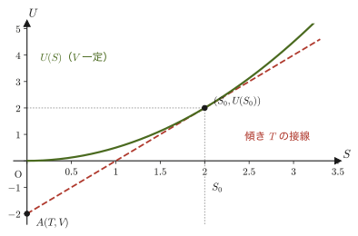
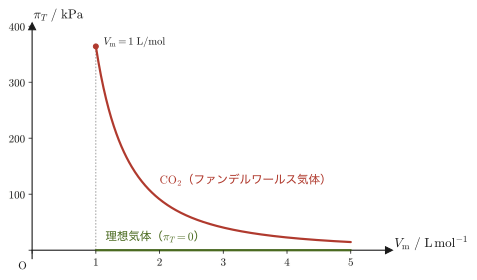

第31章熱力学的関係式とマクスウェルの関係式
容器に閉じ込めた気体を温めたとき，圧力がどれだけ上がるかは，圧力計と温度計があれば測れる．ところが，体積を変えたときにエントロピーがどれだけ変わるかは，どんな装置を使っても直接には測れない．それでも，この2つの量は等しい——というのが，本章の中心の式（マクスウェルの関係式）である．
これまでの章で，内部エネルギー $U$，エンタルピー $H=U+pV$，ヘルムホルツ自由エネルギー $A=U-TS$，ギブスエネルギー $G=H-TS=U+pV-TS$ という4つの状態量が登場した．それぞれ「何が一定のときに自発変化の向きを判定できるか」（第30章）という視点から導入されたのだったが，本章ではまったく別の角度からこの4つを見直す．すなわち，$U,H,A,G$ を「決まった2つの変数の関数」とみなして全微分（2つの変数を同時に少しだけ動かしたときの変化を，1本の式で表したもの）をとると，その係数として現れる8個の偏微分係数（たとえば $\left(\pdiff{U}{S}\right)_V$ のように，ほかの変数を固定して1つの変数だけで微分したもの）が，すべて温度 $T$，圧力 $p$，体積 $V$，エントロピー $S$ のどれか（符号を除いて）に等しい，という驚くべき事実が見えてくる．
さらに，これら8個の偏微分係数の間には，$U,H,A,G$ が「2階の偏微分の順序を交換してよい，滑らかな関数」であることから，4本の等式——マクスウェルの関係式（Maxwell relations）——が成り立つ．これらの関係式は，直接には測定しにくい量（たとえば，体積を変えたときのエントロピーの変化 $(\pdiff{S}{V})_T$）を，実験室で測定しやすい量（たとえば，温度を変えたときの圧力の変化 $(\pdiff{p}{T})_V$）に書き換えることを可能にする，熱力学でもっとも実用的な道具の1つである．高校物理では，圧力・体積・温度・熱量はそれぞれ個別の公式（ボイル・シャルルの法則，比熱の式）で結びついていたが，ここでは，それらの背後に「エントロピーと自由エネルギーの微分関係」という統一的な構造があることが見えてくる．
4つの状態量それぞれについて，(i) 定義から全微分を求める，(ii) 独立変数の関数として全微分を書く，(iii) (i)(ii)を比べて偏微分係数を読み取る，(iv) 2階微分の順序交換（シュワルツの定理）からマクスウェルの関係式を導く，というまったく同じ4段階の手順を4回繰り返す．最初の $U$ でこの手順をゆっくり確認すれば，$H,A,G$ については「同じことをもう一度やるだけ」なので身構える必要はない．
- 内部エネルギー $U$，エンタルピー $H$，ヘルムホルツ自由エネルギー $A$，ギブスエネルギー $G$ の全微分を求め，それぞれの自然な独立変数について偏微分係数を読み取る
- 2階偏微分の順序交換（シュワルツの定理，大学数学 第6章 6.3節）＝完全微分の条件から，4本のマクスウェルの関係式（I）〜（IV）を導き，断熱変化での温度変化や等温圧縮での発熱など，測れる量への書き換えに使う
- $U,H,A,G$ の定義式が「ある変数をその共役量に取り替える」ルジャンドル変換であることを理解し，各ポテンシャルの「自然な変数」を整理する（発展）
- 熱力学的状態方程式 $(\pdiff{U}{V})_T=T(\pdiff{p}{T})_V-p$ をマクスウェルの関係式（III）から導き，理想気体とファンデルワールス気体の内圧やエントロピーを具体的に計算する
- 第27章でも導いた一般のマイヤーの関係式 $C_p-C_V=\alpha^2TV/\kappa_T$ を，マクスウェルの関係式（III）（IV）の立場から導き直し，固体・液体の数値で確かめる
- 熱力学的な安定性の条件 $C_V\gt0$，$\kappa_T\gt0$ を，第2法則（エントロピー増大則）の帰結として理解する
もとにしたノート：望月泰英『物理学ノート 熱力学』 pp. 55–58．
31.1 内部エネルギー $U$ の全微分とマクスウェルの関係式（I）
準静的（可逆）な変化を考える．熱力学第1法則の微分形は，本書の符号の約束（第23章冒頭の約束）にしたがって系が外部からされる仕事 $\dd'W=-p\,\dd V$ を使うと，
\begin{equation} \dd'Q=\dd U+p\,\dd V \label{eq:31-firstlaw} \end{equation}であった（第26章 26.6節）．一方，エントロピーの定義（第29章 29.1節）から，準静的な変化では
\begin{equation} \dd'Q=T\,\dd S \label{eq:31-entropy-def} \end{equation}である．式 \eqref{eq:31-firstlaw} と式 \eqref{eq:31-entropy-def} は，どちらも同じ $\dd'Q$（この瞬間に系が受け取る熱）を表しているので，右辺どうしを等号で結んでよい：
$$ \dd U+p\,\dd V=T\,\dd S $$これを $\dd U$ について解くと，
\begin{equation} \dd U=T\,\dd S-p\,\dd V \label{eq:31-dU} \end{equation}が得られる．これが，本章のすべての議論の出発点になる関係式である．
注意：この式は準静的でない変化にも成り立つ
式 \eqref{eq:31-dU} を導く途中では，準静的（可逆）な変化を仮定した．準静的でない変化では，系全体で単一の温度 $T$ を決められないことがあり，$\dd'Q=T\,\dd S$（式 \eqref{eq:31-entropy-def}）そのものが成り立たないからである．しかし，式 \eqref{eq:31-dU} の両辺は，$U,S,V$ という状態量（そのときの系の状態だけで決まり，そこに至った経路にはよらない量）の微小な変化だけで書かれている．したがって式 \eqref{eq:31-dU}（そしてこのあと導く $\dd H,\dd A,\dd G$ の式もすべて）は，「近接した2つの平衡状態の間の状態量の変化の関係式」であり，2つの状態を結ぶ実際の過程が可逆か不可逆かにはよらず成り立つ．途中の非平衡状態に温度 $T$ を割り当てる必要はない．
たとえば理想気体が真空へ自由膨張するとき（第29章 29.8節），熱も仕事もやりとりしないので $\dd U=0$ だが，始状態と終状態の間でエントロピーは $\dd S=nR\,\dd V/V\gt0$ だけ増えている．このとき $0=T\,\dd S-p\,\dd V$（$T\,\dd S=nRT\,\dd V/V=p\,\dd V$）となって式 \eqref{eq:31-dU} は正しく成り立つ．ここで $T\,\dd S$ は実際に受け取った熱 $\dd'Q\,(=0)$ ではなく，状態量の変化としての値であることに注意しよう．
式 \eqref{eq:31-dU} は，$\dd U$ が $\dd S$ と $\dd V$ という2つの微小量の1次結合として書けることを示している．そこで，$U$ を $S$ と $V$ の2変数関数 $U=U(S,V)$ とみなしてみよう（$U$ が実際にそのような関数として決まることは，$U,S,V$ がいずれも状態量であることから保証される——状態量どうしの間には，系の自由度の数だけ独立変数を選べば，残りをその関数として表せるという関係がある）．2変数関数の全微分の一般公式（大学数学 第6章 6.2節）は
\begin{equation} \dd U=\left(\pdiff{U}{S}\right)_V\dd S+\left(\pdiff{U}{V}\right)_S\dd V \label{eq:31-dU-general} \end{equation}である．ここで添字 $V$（または $S$）は「その変数を一定に保って偏微分する」という熱力学に特有の記法であり，第27章 27.2節ですでに使ったとおりである．
導出：係数比較で偏微分係数を読み取る
式 \eqref{eq:31-dU} と式 \eqref{eq:31-dU-general} は，どちらも同じ $U$ の全微分 $\dd U$ を，$\dd S$ と $\dd V$ の1次結合として表した式である．$\dd S,\dd V$ は（$S,V$ を独立変数に選んだので）互いに独立に動かせる微小量だから，2つの式が任意の $\dd S,\dd V$ について等しくなるためには，$\dd S$ の係数どうし，$\dd V$ の係数どうしがそれぞれ等しくなければならない（多項式の係数比較や，ベクトルの成分比較とまったく同じ論理である）．よって，
$$ \left(\pdiff{U}{S}\right)_V=T,\qquad\qquad \left(\pdiff{U}{V}\right)_S=-p $$が得られる．
（導出終わり）
定理31.1 内部エネルギーの偏微分表示
\begin{equation} \left(\pdiff{U}{S}\right)_V=T,\qquad\qquad \left(\pdiff{U}{V}\right)_S=-p \label{eq:31-U-partials} \end{equation}イメージ：2つの偏微分係数の意味
$\left(\pdiff{U}{S}\right)_V=T$ の意味を考えよう．体積 $V$ を一定に保った準静的な変化では，式 \eqref{eq:31-dU} の右辺第2項 $-p\,\dd V$ が $0$ になるので，$\dd U=T\,\dd S$ となる．すなわち，定積変化では，内部エネルギーの変化は「温度 $\times$ エントロピー変化」に等しい——エントロピーを1単位 $[\mathrm{J/K}]$ だけ増やすのに必要な内部エネルギーの増分が，まさに温度 $T$ である，と読める．
$\left(\pdiff{U}{V}\right)_S=-p$ の意味も同様に考える．エントロピー $S$ を一定に保った準静的な変化，すなわち準静的な断熱変化（式 \eqref{eq:31-entropy-def} $\dd'Q=T\,\dd S$ より，断熱で $\dd'Q=0$ ならば準静的な変化では必ず $\dd S=0$ になる）では，式 \eqref{eq:31-dU} の右辺第1項 $T\,\dd S$ が $0$ になるので，$\dd U=-p\,\dd V$ となる．気体が膨張する（$\dd V\gt0$）とき $\dd U\lt0$ となり，これは準静的（可逆）な断熱変化では，内部エネルギーは気体が外部にした仕事の分だけ減少するということを表している（外部にした仕事 $\dd'W'=-\dd'W=p\,\dd V$ を思い出せば，$\dd U=-\dd'W'$ となって，まさに「した仕事の分だけ内部エネルギーが減る」というエネルギー保存そのものである）．
式 \eqref{eq:31-U-partials} の2式は，一見すると別々の実験事実のようだが，実は互いに独立ではない．$U(S,V)$ が滑らかな（何回でも偏微分できる）関数であれば，2階の偏微分は微分の順序によらない——これがシュワルツの定理（Schwarz's theorem，クレローの定理ともいう．大学数学 第6章 6.3節 定理6.1）である．この事実を式 \eqref{eq:31-U-partials} の2式に適用すると，$T$ と $p$ という一見無関係な2つの量の間に，新しい関係式が生まれる．
導出：マクスウェルの関係式（I）
式 \eqref{eq:31-U-partials} の第1式 $T=\left(\pdiff{U}{S}\right)_V$ を，今度は $V$ で（$S$ を一定に保って）偏微分する：
$$ \left(\pdiff{T}{V}\right)_S=\pdiff{}{V}\left(\pdiff{U}{S}\right)_V=\frac{\partial^2U}{\partial V\,\partial S} $$同様に，式 \eqref{eq:31-U-partials} の第2式 $-p=\left(\pdiff{U}{V}\right)_S$ を，今度は $S$ で（$V$ を一定に保って）偏微分する：
$$ \left(\pdiff{p}{S}\right)_V=-\pdiff{}{S}\left(\pdiff{U}{V}\right)_S=-\frac{\partial^2U}{\partial S\,\partial V} $$ここでシュワルツの定理 $\dfrac{\partial^2U}{\partial V\,\partial S}=\dfrac{\partial^2U}{\partial S\,\partial V}$（$U$ が滑らかな関数であることによる）を使うと，上の2式の右辺は符号を除いて同じ量である．すなわち，
$$ \left(\pdiff{T}{V}\right)_S=\frac{\partial^2U}{\partial V\,\partial S}=\frac{\partial^2U}{\partial S\,\partial V}=-\left(\pdiff{p}{S}\right)_V $$より，
$$ \left(\pdiff{T}{V}\right)_S=-\left(\pdiff{p}{S}\right)_V $$が得られる．
（導出終わり）
公式31.1 マクスウェルの関係式（I）
\begin{equation} \left(\pdiff{T}{V}\right)_S=-\left(\pdiff{p}{S}\right)_V \label{eq:31-maxwell-1} \end{equation}なぜこれが便利なのか：断熱変化での温度変化
式 \eqref{eq:31-maxwell-1} の左辺 $\left(\pdiff{T}{V}\right)_S$ は「エントロピーを一定に保ちながら（準静的な断熱変化で）体積を変えたときの温度変化」であり，これを実験で直接調べるのは難しい．ところが右辺を書き換えると，測りやすい量だけで表せる．まず，体積一定では式 \eqref{eq:31-dU} が $\dd U=T\,\dd S$ となるので，定積熱容量は $C_V=\left(\pdiff{U}{T}\right)_V=T\left(\pdiff{S}{T}\right)_V$，すなわち $\left(\pdiff{T}{S}\right)_V=T/C_V$ である．したがって $\left(\pdiff{p}{S}\right)_V=\left(\pdiff{p}{T}\right)_V\left(\pdiff{T}{S}\right)_V=\dfrac{T}{C_V}\left(\pdiff{p}{T}\right)_V$ となり，式 \eqref{eq:31-maxwell-1} は
$$ \left(\pdiff{T}{V}\right)_S=-\frac{T}{C_V}\left(\pdiff{p}{T}\right)_V $$と書き換えられる．右辺は，定積で温度を上げたときの圧力の増え方（圧力計と温度計で測れる）と熱容量だけで決まる．圧力が温度とともに増える物質（$\left(\pdiff{p}{T}\right)_V\gt0$）では，断熱膨張（$\dd V\gt0$）で温度が下がることが，この式から読み取れる．理想気体では $\left(\pdiff{p}{T}\right)_V=nR/V$ なので $\left(\pdiff{T}{V}\right)_S=-nRT/(C_VV)$ となり，第27章のポアソンの公式 $TV^{\gamma-1}=\text{一定}$ と一致する（例題31.3）．
例題31.1 定積・断熱変化での内部エネルギー変化
(a) $1\ \mathrm{mol}$ の単原子分子理想気体（$C_V=\tfrac32R=12.5\ \mathrm{J/(K\,mol)}$）を，体積を一定に保ったまま準静的に加熱し，エントロピーを $\Delta S=+0.050\ \mathrm{J/K}$ だけ増加させた（温度は $T=300\ \mathrm K$ 付近である）．(b) 別の実験で，同じ気体を準静的・断熱的に体積を $\Delta V=+1.0\times10^{-4}\ \mathrm{m^3}$ だけ膨張させた（圧力は $p=2.0\times10^{5}\ \mathrm{Pa}$ で一定とみなせるとする）．それぞれの場合の内部エネルギー変化 $\Delta U$ を求めよ．
解答 (a) 定積変化なので式 \eqref{eq:31-dU} の第2項が $0$ である．定理31.1の $\left(\pdiff{U}{S}\right)_V=T$ を有限の変化に近似的に適用して，
$$ \Delta U\approx T\,\Delta S=300\ \mathrm{K}\times0.050\ \mathrm{J/K}=15\ \mathrm{J} $$（単位の確認：$\mathrm{K}\times\mathrm{J/K}=\mathrm{J}$ で左辺の単位と一致．）この近似は $T$ が変化の間ほぼ一定であることを前提にしている．確かめると，定積では $\dd U=C_V\,\dd T=T\,\dd S$ なので $\Delta T\approx T\,\Delta S/C_V=15\ \mathrm J/12.5\ \mathrm{J/K}\approx1.2\ \mathrm K$ であり，$300\ \mathrm K$ に比べて $0.4\ \%$ しか変わらない．近似は妥当である（厳密には $\Delta S=C_V\ln(T_2/T_1)$ から $T_2=301.2\ \mathrm K$，$\Delta U=C_V(T_2-T_1)=15.03\ \mathrm J$ で，差は $0.2\ \%$ 以下である）．
(b) 準静的な断熱変化なので $\Delta S=0$，式 \eqref{eq:31-dU} の第1項が $0$ となり，定理31.1の $\left(\pdiff{U}{V}\right)_S=-p$ を使って，
$$ \Delta U\approx-p\,\Delta V=-2.0\times10^{5}\ \mathrm{Pa}\times1.0\times10^{-4}\ \mathrm{m^3}=-20\ \mathrm{J} $$（単位の確認：$\mathrm{Pa}\times\mathrm{m^3}=\mathrm{N/m^2}\times\mathrm{m^3}=\mathrm{N\cdot m}=\mathrm{J}$ で一致．この気体の体積は $V=RT/p\approx1.2\times10^{-2}\ \mathrm{m^3}$（$T=300\ \mathrm K$ のとき）で，$\Delta V$ はその $0.8\ \%$ にすぎないから，圧力一定とみなしてよい．）気体が膨張したので，外部に仕事をした分だけ内部エネルギーが減少している——(a)は熱をもらって内部エネルギーが増える場合，(b)は仕事を失って内部エネルギーが減る場合であり，式 \eqref{eq:31-dU} の2つの項の意味の違いが数値にはっきり表れている．
31.2 エンタルピー $H$ の全微分とマクスウェルの関係式（II）
31.1節とまったく同じ4段階の手順を，今度はエンタルピー $H$ について繰り返す．エンタルピーは第27章 27.2節で $H\equiv U+pV$ と定義されていた．この定義式を微分すると（積の微分法則 $\dd(pV)=p\,\dd V+V\,\dd p$ を使う），
$$ \dd H=\dd U+\dd(pV)=\underline{\underline{\dd U}}+p\,\dd V+V\,\dd p $$ここで，二重下線を引いた $\dd U$ の部分に，31.1節で求めた式 \eqref{eq:31-dU}（$\dd U=T\,\dd S-p\,\dd V$）をそのまま代入する：
$$ \dd H=\underline{\underline{T\,\dd S-p\,\dd V}}+p\,\dd V+V\,\dd p $$右辺の $-p\,\dd V$ と $+p\,\dd V$ がちょうど打ち消し合うので，
\begin{equation} \dd H=T\,\dd S+V\,\dd p \label{eq:31-dH} \end{equation}が得られる．$U(S,V)$ のときは独立変数が $(S,V)$ だったのに対し，$H$ では体積 $V$ の代わりに圧力 $p$ が現れている点に注目しよう——エンタルピーは「$V$ を $p$ に取り替えた」内部エネルギーのようなものである（この「取り替え」の正体は31.5節で明らかになる）．
$H$ を $S,p$ の関数 $H=H(S,p)$ とみなすと，全微分の一般公式は
\begin{equation} \dd H=\left(\pdiff{H}{S}\right)_p\dd S+\left(\pdiff{H}{p}\right)_S\dd p \label{eq:31-dH-general} \end{equation}である．31.1節とまったく同じ論理（$\dd S,\dd p$ が独立に動かせる微小量なので，係数どうしを比較できる）を式 \eqref{eq:31-dH} と式 \eqref{eq:31-dH-general} に適用すると，次の定理が得られる．
定理31.2 エンタルピーの偏微分表示
\begin{equation} \left(\pdiff{H}{S}\right)_p=T,\qquad\qquad \left(\pdiff{H}{p}\right)_S=V \label{eq:31-H-partials} \end{equation}イメージ：2つの偏微分係数の意味
$\left(\pdiff{H}{S}\right)_p=T$ の意味は，圧力 $p$ を一定に保った準静的な変化（式 \eqref{eq:31-dH} の第2項 $V\,\dd p$ が $0$ になる）では $\dd H=T\,\dd S$，すなわち定圧変化では，エンタルピーの変化は温度にエントロピー変化をかけたものに等しいということである．実際，定圧下では $\dd'Q=\dd H$（第27章 27.2節で見た関係）であり，かつ準静的なら $\dd'Q=T\,\dd S$ なのだから，$\dd H=T\,\dd S$ となるのは当然でもある——2つの経路（式 \eqref{eq:31-dH} を経由する経路と，$\dd'Q=\dd H=T\,\dd S$ を直接使う経路）が同じ結論に至ることを確認できたことになる．
$\left(\pdiff{H}{p}\right)_S=V$ の意味は，エントロピー一定，すなわち準静的な断熱変化では $\dd H=V\,\dd p$ となることである．これは，コンプレッサーやタービンのように気体が流れ込み流れ出す装置の中で気体を断熱的に圧縮・膨張させるとき，外部とやりとりする仕事（工学でいう工業仕事 $\int V\,\dd p$）に対応する量である．気体を断熱的に圧縮する（$\dd p\gt0$）と，外部から仕事をされて $H$ が増加する（$\dd H\gt0$）．ピストンの中に閉じ込めた気体が膨張・収縮するときの体積仕事 $p\,\dd V$（$\dd U=-p\,\dd V$ に対応する）とは別の量であり，たとえば理想気体の断熱変化では $\Delta H=\gamma\,\Delta U$，つまり $\Delta U$ の $\gamma$ 倍になる（例題31.2）．
なお，第27章 27.6節で学んだジュール＝トムソン効果は，多孔質栓を通した断熱の定常流で起こるエンタルピー一定（等エンタルピー）の変化であり，そのとき圧力は下がる．ここでの $\left(\pdiff{H}{p}\right)_S$ は，逆にエントロピー一定（準静的な断熱）のもとで圧力を変えたときのエンタルピーの変化であり，混同しないよう注意する．
導出：マクスウェルの関係式（II）
式 \eqref{eq:31-H-partials} の第1式 $T=\left(\pdiff{H}{S}\right)_p$ を $p$ で（$S$ を一定に保って）偏微分し，第2式 $V=\left(\pdiff{H}{p}\right)_S$ を $S$ で（$p$ を一定に保って）偏微分すると，
$$ \left(\pdiff{T}{p}\right)_S=\frac{\partial^2H}{\partial p\,\partial S},\qquad\qquad \left(\pdiff{V}{S}\right)_p=\frac{\partial^2H}{\partial S\,\partial p} $$となる．$H$ が滑らかな関数であることからシュワルツの定理 $\dfrac{\partial^2H}{\partial p\,\partial S}=\dfrac{\partial^2H}{\partial S\,\partial p}$ が成り立つので，右辺どうしが等しく，したがって左辺どうしも等しい：
$$ \left(\pdiff{T}{p}\right)_S=\left(\pdiff{V}{S}\right)_p $$（導出終わり）
公式31.2 マクスウェルの関係式（II）
\begin{equation} \left(\pdiff{T}{p}\right)_S=\left(\pdiff{V}{S}\right)_p \label{eq:31-maxwell-2} \end{equation}なぜこれが便利なのか：断熱圧縮での温度変化
式 \eqref{eq:31-maxwell-2} の左辺 $\left(\pdiff{T}{p}\right)_S$ は「準静的な断熱変化で圧力を変えたときの温度変化」である．右辺を書き換えよう．圧力一定では $\dd H=T\,\dd S$ なので，定圧熱容量は $C_p=\left(\pdiff{H}{T}\right)_p=T\left(\pdiff{S}{T}\right)_p$，すなわち $\left(\pdiff{T}{S}\right)_p=T/C_p$ である．また膨張率 $\alpha$ の定義（第27章 27.4節）より $\left(\pdiff{V}{T}\right)_p=\alpha V$．したがって $\left(\pdiff{V}{S}\right)_p=\left(\pdiff{V}{T}\right)_p\left(\pdiff{T}{S}\right)_p=\alpha V\cdot\dfrac{T}{C_p}$ となり，式 \eqref{eq:31-maxwell-2} は
$$ \left(\pdiff{T}{p}\right)_S=\frac{\alpha TV}{C_p} $$と書き換えられる．右辺の $\alpha,V,C_p$ はいずれも実験で測れる量である．膨張率 $\alpha\gt0$ の物質（ほとんどの固体・液体・気体）は，断熱圧縮すると温度が上がる．反対に，$4\ ^\circ\mathrm{C}$ 以下の水のように $\alpha\lt0$ の物質は，断熱圧縮すると冷える．理想気体では $\alpha=1/T$ なので $\left(\pdiff{T}{p}\right)_S=V/C_p$ となり，ポアソンの公式から得られる結果と一致する（例題31.3）．固体（銅）の場合の数値は演習31.8で調べる．
例題31.2 断熱圧縮でのエンタルピーの変化
単原子分子理想気体 $1\ \mathrm{mol}$（$C_V=\tfrac32R$，$C_p=\tfrac52R$，$\gamma=C_p/C_V=5/3$）を，$T_1=300\ \mathrm K$，$p_1=1.0\times10^{5}\ \mathrm{Pa}$ から準静的に断熱圧縮して，圧力を $p_2=2.0\times10^{5}\ \mathrm{Pa}$ にした．(a) 終状態の温度 $T_2$，(b) 内部エネルギーの変化 $\Delta U$，(c) エンタルピーの変化 $\Delta H$ を求めよ．また (d) $\Delta H=\int V\,\dd p$ となること，および $\Delta H=\gamma\,\Delta U$ となることを確かめよ．
解答 (a) 準静的な断熱変化では $pV^{\gamma}=\text{一定}$（第27章 27.3節の公式27.1）．$V=RT/p$ を代入すると $p^{1-\gamma}T^{\gamma}=\text{一定}$，すなわち $T\,p^{(1-\gamma)/\gamma}=\text{一定}$ なので，
$$ T_2=T_1\left(\frac{p_2}{p_1}\right)^{(\gamma-1)/\gamma}=300\ \mathrm K\times2^{2/5}=300\ \mathrm K\times1.3195=3.96\times10^{2}\ \mathrm K $$（$(\gamma-1)/\gamma=(2/3)/(5/3)=2/5$）．温度上昇は $\Delta T=T_2-T_1=95.9\ \mathrm K$．
(b) 断熱変化では $\dd'Q=0$ なので，$\Delta U$ は外部からされた仕事に等しい．$\Delta U=C_V\Delta T=12.47\ \mathrm{J/K}\times95.9\ \mathrm K=1.20\times10^{3}\ \mathrm J$．
(c) 理想気体では $H=U+pV=C_VT+nRT=C_pT$（$U$ の原点の取り方による定数を除く）と，$H$ も温度だけの関数なので，どんな過程でも $\Delta H=C_p\Delta T$ である．よって $\Delta H=20.79\ \mathrm{J/K}\times95.9\ \mathrm K=1.99\times10^{3}\ \mathrm J$．
(d) 断熱変化 $pV^\gamma=K$（$K$ は定数）より $V=(K/p)^{1/\gamma}$ なので，
$$ \int_{p_1}^{p_2}V\,\dd p=K^{1/\gamma}\int_{p_1}^{p_2}p^{-1/\gamma}\,\dd p=K^{1/\gamma}\,\frac{\gamma}{\gamma-1}\Bigl[p^{(\gamma-1)/\gamma}\Bigr]_{p_1}^{p_2}=\frac{\gamma}{\gamma-1}\,(p_2V_2-p_1V_1) $$（$K^{1/\gamma}p^{(\gamma-1)/\gamma}=pV$ を使った）．$p_2V_2-p_1V_1=nR(T_2-T_1)$ であり，$\dfrac{\gamma}{\gamma-1}nR=C_p$（$C_V=nR/(\gamma-1)$ より）なので，$\int V\,\dd p=C_p\Delta T=1.99\times10^{3}\ \mathrm J=\Delta H$ となって確かに一致する．また $\Delta H/\Delta U=C_p/C_V=\gamma=5/3$．この差は $\Delta H-\Delta U=\Delta(pV)=nR\Delta T=0.80\times10^{3}\ \mathrm J$ であり，流れの中で気体を押し込む仕事 $pV$ の分にあたる．同じ圧縮でも，ピストンに閉じ込めて圧縮するとき外部がする仕事は $\Delta U=1.20\ \mathrm{kJ}$ で，コンプレッサーのように流れの中で圧縮するときの仕事 $\Delta H=1.99\ \mathrm{kJ}$ の $1/\gamma$ 倍である．
例題31.3 理想気体でのマクスウェルの関係式（I）（II）の確認
定積・定圧熱容量 $C_V,\ C_p=C_V+nR$ が温度によらない理想気体（$n\ \mathrm{mol}$）について，公式31.1と公式31.2の両辺をそれぞれ計算し，一致することを確かめよ．
解答 第29章 29.2節の公式29.1より $S(T,V)=C_V\ln T+nR\ln V+\alpha_0$．これに $V=nRT/p$ を代入すると $S(T,p)=(C_V+nR)\ln T-nR\ln p+\alpha_0'=C_p\ln T-nR\ln p+\alpha_0'$ である．したがって $\left(\pdiff{S}{T}\right)_V=C_V/T$，$\left(\pdiff{S}{T}\right)_p=C_p/T$，すなわち $\left(\pdiff{T}{S}\right)_V=T/C_V$，$\left(\pdiff{T}{S}\right)_p=T/C_p$ である．また，断熱変化の関係式（公式27.1）から $S$ 一定で $TV^{\gamma-1}=\text{一定}$，$T\,p^{(1-\gamma)/\gamma}=\text{一定}$ である．さらに $\gamma-1=nR/C_V$，$(\gamma-1)/\gamma=nR/C_p$ を使う．
(I) 左辺：$T=(\text{定数})\,V^{-(\gamma-1)}$ より $\left(\pdiff{T}{V}\right)_S=-(\gamma-1)\dfrac{T}{V}=-\dfrac{nRT}{C_VV}$．右辺：$p=nRT/V$ なので $\left(\pdiff{p}{S}\right)_V=\dfrac{nR}{V}\left(\pdiff{T}{S}\right)_V=\dfrac{nRT}{C_VV}$，よって $-\left(\pdiff{p}{S}\right)_V=-\dfrac{nRT}{C_VV}$．両辺は一致する．
(II) 左辺：$T=(\text{定数})\,p^{(\gamma-1)/\gamma}$ より $\left(\pdiff{T}{p}\right)_S=\dfrac{\gamma-1}{\gamma}\dfrac{T}{p}=\dfrac{nRT}{C_pp}$．右辺：$V=nRT/p$ なので $\left(\pdiff{V}{S}\right)_p=\dfrac{nR}{p}\left(\pdiff{T}{S}\right)_p=\dfrac{nRT}{C_pp}$．両辺は一致する．
（左辺の計算は第1法則から導いたポアソンの公式だけを，右辺の計算は理想気体のエントロピーだけを使っており，互いに独立な計算が一致したことになる．なお (I) の値は31.1節の「なぜこれが便利なのか」の式 $-\dfrac{T}{C_V}\left(\pdiff{p}{T}\right)_V=-\dfrac{nRT}{C_VV}$ とも，(II) の値は $\dfrac{\alpha TV}{C_p}=\dfrac{V}{C_p}=\dfrac{nRT}{C_pp}$ とも一致している．）
31.3 ヘルムホルツ自由エネルギー $A$ の全微分とマクスウェルの関係式（III）
同じ手順を，ヘルムホルツ自由エネルギー $A\equiv U-TS$（第30章 30.4節 定義30.1）について繰り返す．定義式を微分すると（積の微分法則 $\dd(TS)=T\,\dd S+S\,\dd T$ を使う），
$$ \dd A=\dd U-\dd(TS)=\underline{\underline{\dd U}}-T\,\dd S-S\,\dd T $$二重下線を引いた $\dd U$ に式 \eqref{eq:31-dU}（$\dd U=T\,\dd S-p\,\dd V$）を代入すると，
$$ \dd A=\underline{\underline{T\,\dd S-p\,\dd V}}-T\,\dd S-S\,\dd T $$右辺の $T\,\dd S$ と $-T\,\dd S$ が打ち消し合うので，
\begin{equation} \dd A=-p\,\dd V-S\,\dd T \label{eq:31-dA} \end{equation}となる．今度は，独立変数が $(S,V)$ でも $(S,p)$ でもなく $(V,T)$ に変わった——エントロピー $S$ が姿を消し，代わりに温度 $T$ が現れている．実験室では，エントロピーを直接コントロールするより，温度計と恒温槽で温度を一定に保つほうがずっと簡単なので，このヘルムホルツエネルギーは実用上たいへん使いやすい変数の組み合わせになっている．
$A$ を $V,T$ の関数 $A=A(V,T)$ とみなすと，全微分の一般公式は
\begin{equation} \dd A=\left(\pdiff{A}{V}\right)_T\dd V+\left(\pdiff{A}{T}\right)_V\dd T \label{eq:31-dA-general} \end{equation}である．式 \eqref{eq:31-dA} と式 \eqref{eq:31-dA-general} の係数を比較すると，次の定理が得られる．
定理31.3 ヘルムホルツ自由エネルギーの偏微分表示
\begin{equation} \left(\pdiff{A}{V}\right)_T=-p,\qquad\qquad \left(\pdiff{A}{T}\right)_V=-S \label{eq:31-A-partials} \end{equation}イメージ：2つの偏微分係数の意味
$\left(\pdiff{A}{V}\right)_T=-p$ の意味は，温度 $T$ を一定に保った準静的な変化（式 \eqref{eq:31-dA} の第2項 $-S\,\dd T$ が $0$ になる）では $\dd A=-p\,\dd V$ となる，ということである．第30章 30.4節で見たように，定積・定温では自発変化にともなって $A$ は減少し，30.5節で見たように，可逆な等温変化で系が外部にできる最大の仕事は $A$ の減少分 $-\Delta A$ に等しかった．$\left(\pdiff{A}{V}\right)_T=-p$ はこの関係を偏微分の形で表したものであり，「等温条件のもとで体積を $\dd V$ だけ増やすと，系が外部にした仕事 $p\,\dd V$ の分だけ，取り出せる最大仕事の元手 $A$ が減る」と読める．
$\left(\pdiff{A}{T}\right)_V=-S$ の意味は，体積 $V$ を一定に保った変化では $\dd A=-S\,\dd T$ となる，ということである．エントロピーは $S\ge0$（第32章の熱力学第3法則）なので，この式は「定積のもとでは，温度を上げると $A$ は減少する」ことを表している．$A=U-TS$ の右辺の $-TS$ の項が，$T$ が上がるほど大きな負の値になっていくためである．たとえば単原子分子理想気体では $U=\tfrac32nRT$，$S=\tfrac32nR\ln T+nR\ln V+\text{定数}$ なので，$A=U-TS$ を $T$ で微分すると $\tfrac32nR-\bigl(S+\tfrac32nR\bigr)=-S$ となり，たしかに $\left(\pdiff{A}{T}\right)_V=-S$ が成り立っている．
導出：マクスウェルの関係式（III）
式 \eqref{eq:31-A-partials} の第1式 $-p=\left(\pdiff{A}{V}\right)_T$ を $T$ で（$V$ を一定に保って）偏微分し，第2式 $-S=\left(\pdiff{A}{T}\right)_V$ を $V$ で（$T$ を一定に保って）偏微分すると，
$$ -\left(\pdiff{p}{T}\right)_V=\frac{\partial^2A}{\partial T\,\partial V},\qquad\qquad -\left(\pdiff{S}{V}\right)_T=\frac{\partial^2A}{\partial V\,\partial T} $$$A$ が滑らかな関数であることからシュワルツの定理 $\dfrac{\partial^2A}{\partial T\,\partial V}=\dfrac{\partial^2A}{\partial V\,\partial T}$ が成り立つので，右辺どうしが等しく，したがって左辺どうしも等しい：
$$ -\left(\pdiff{p}{T}\right)_V=-\left(\pdiff{S}{V}\right)_T $$両辺に $-1$ をかけて，
$$ \left(\pdiff{p}{T}\right)_V=\left(\pdiff{S}{V}\right)_T $$（導出終わり）
公式31.3 マクスウェルの関係式（III）
\begin{equation} \left(\pdiff{p}{T}\right)_V=\left(\pdiff{S}{V}\right)_T \label{eq:31-maxwell-3} \end{equation}なぜこれが特に便利なのか
公式31.3の左辺 $\left(\pdiff{p}{T}\right)_V$ は，体積を一定に保った容器の中で温度を変えたときの圧力変化であり，圧力計と温度計だけで直接測定できる量である．したがって，右辺の $\left(\pdiff{S}{V}\right)_T$ ——体積変化にともなうエントロピーの変化——という，本来は測りにくい量が，測定可能な量から求められることになる．この式は31.6節・31.7節で，理想気体やファンデルワールス気体の内圧の計算に直接使われる，本章でもっとも実用性の高いマクスウェルの関係式である．
例題31.4 理想気体でのマクスウェルの関係式（III）の確認
理想気体の状態方程式 $pV=nRT$（第23章 23.6節）を使って，公式31.3の両辺 $\left(\pdiff{p}{T}\right)_V$ と $\left(\pdiff{S}{V}\right)_T$ をそれぞれ計算し，両者が一致することを確認せよ．
解答 状態方程式を $p$ について解くと $p=nRT/V$．これを $T$ で（$V,n$ を一定に保って）偏微分すると，
$$ \left(\pdiff{p}{T}\right)_V=\frac{nR}{V} $$である．一方，右辺 $\left(\pdiff{S}{V}\right)_T$ には理想気体のエントロピーの関数形が必要である．第29章 29.2節では，第1法則 $\dd U=C_V\,\dd T$（理想気体）とエントロピーの定義 $\dd S=\dd'Q/T$ から $\dd S=C_V\,\dd T/T+(p/T)\,\dd V$ を作り，$p/T=nR/V$ を使って積分し，公式29.1 $S(T,V)=C_V\ln T+nR\ln V+\alpha_0$ を得ていた．この導出にはマクスウェルの関係式は使っていない．これを $V$ で（$T$ を一定に保って）偏微分すると，
$$ \left(\pdiff{S}{V}\right)_T=\frac{nR}{V} $$となり，たしかに $\left(\pdiff{p}{T}\right)_V=\left(\pdiff{S}{V}\right)_T=nR/V$ で一致する．公式31.3を使えば，右辺のように理想気体のエントロピーの関数形をいちいち導かなくても，状態方程式（左辺）だけから同じ結果を求められる，という点が実用上のありがたみである．
31.4 ギブスエネルギー $G$ の全微分とマクスウェルの関係式（IV）とまとめ — 熱力学的正方形
最後に，ギブスエネルギー $G\equiv U+pV-TS=H-TS$（第30章 30.4節 定義30.2）について同じ手順を繰り返す．$G=H-TS$ の形を使い，定義式を微分すると，
$$ \dd G=\dd H-\dd(TS)=\underline{\underline{\dd H}}-T\,\dd S-S\,\dd T $$二重下線を引いた $\dd H$ に式 \eqref{eq:31-dH}（$\dd H=T\,\dd S+V\,\dd p$）を代入すると，
$$ \dd G=\underline{\underline{T\,\dd S+V\,\dd p}}-T\,\dd S-S\,\dd T $$右辺の $T\,\dd S$ と $-T\,\dd S$ が打ち消し合うので，
\begin{equation} \dd G=V\,\dd p-S\,\dd T \label{eq:31-dG} \end{equation}となる．独立変数は $(p,T)$——圧力と温度——であり，これは実験室でもっともコントロールしやすい2つの変数の組である（部屋の温度と大気圧のもとで反応を行う化学実験を思い浮かべればよい）．これが，ギブスエネルギーが化学・材料科学でもっとも頻繁に使われる理由である．
$G$ を $p,T$ の関数 $G=G(p,T)$ とみなすと，全微分の一般公式は
\begin{equation} \dd G=\left(\pdiff{G}{p}\right)_T\dd p+\left(\pdiff{G}{T}\right)_p\dd T \label{eq:31-dG-general} \end{equation}である．式 \eqref{eq:31-dG} と式 \eqref{eq:31-dG-general} の係数を比較すると，次の定理が得られる．
定理31.4 ギブスエネルギーの偏微分表示
\begin{equation} \left(\pdiff{G}{p}\right)_T=V,\qquad\qquad \left(\pdiff{G}{T}\right)_p=-S \label{eq:31-G-partials} \end{equation}イメージ：2つの偏微分係数の意味
$\left(\pdiff{G}{p}\right)_T=V$ の意味は，温度一定のもとで圧力を $\dd p$ だけ上げると，ギブスエネルギーが体積 $V$ に比例して増える，ということである．体積はつねに正なので，等温では，圧力を上げるとギブスエネルギーは必ず増加する——気体のように体積が大きい物質ほど，圧力変化に対するギブスエネルギーの応答が敏感である（第32章以降で相転移を扱うとき，この関係が固体・液体・気体のどれが安定かを決める鍵になる）．
$\left(\pdiff{G}{T}\right)_p=-S$ の意味は，第30章 30.6節で得た結果（$(\pdiff{G}{T})_p=-S$ を用いたギブス＝ヘルムホルツの式の導出）とまったく同じ関係式であり，31.3節の $A$ の場合と同様，定圧では，温度を上げるとギブスエネルギーは必ず減少する（$S\ge0$ による）ことを表している．
導出：マクスウェルの関係式（IV）
式 \eqref{eq:31-G-partials} の第1式 $V=\left(\pdiff{G}{p}\right)_T$ を $T$ で（$p$ を一定に保って）偏微分し，第2式 $-S=\left(\pdiff{G}{T}\right)_p$ を $p$ で（$T$ を一定に保って）偏微分すると，
$$ \left(\pdiff{V}{T}\right)_p=\frac{\partial^2G}{\partial T\,\partial p},\qquad\qquad -\left(\pdiff{S}{p}\right)_T=\frac{\partial^2G}{\partial p\,\partial T} $$$G$ が滑らかな関数であることからシュワルツの定理 $\dfrac{\partial^2G}{\partial T\,\partial p}=\dfrac{\partial^2G}{\partial p\,\partial T}$ が成り立つので，右辺どうしが等しく，したがって左辺どうしも等しい：
$$ \left(\pdiff{V}{T}\right)_p=-\left(\pdiff{S}{p}\right)_T $$（導出終わり）
公式31.4 マクスウェルの関係式（IV）
\begin{equation} \left(\pdiff{V}{T}\right)_p=-\left(\pdiff{S}{p}\right)_T \label{eq:31-maxwell-4} \end{equation}なぜこれが便利なのか：等温圧縮での発熱
公式31.4の左辺 $\left(\pdiff{V}{T}\right)_p$ は，第27章 27.4節で導入した体膨張率 $\alpha=\dfrac{1}{V}\left(\pdiff{V}{T}\right)_p$（高校物理の線膨張率・体膨張率の考え方を偏微分で書き直したもの）を使うと $\alpha V$ に等しく，実験室で容易に測定できる．したがって，公式31.4は
$$ \left(\pdiff{S}{p}\right)_T=-\alpha V $$と書き換えられ，圧力変化にともなうエントロピーの変化——これ自体は直接測れない量——が，体膨張率の測定だけからわかる．$\alpha\gt0$ の物質では，等温で圧縮する（$\dd p\gt0$）とエントロピーが減る．準静的な等温変化では $\dd'Q=T\,\dd S$ なので，等温圧縮の間に物質は $\dd'Q=-T\alpha V\,\dd p\lt0$，つまり熱を外へ放出する．温度を保つには，この熱を逃がしてやらなければならない（数値の例は例題31.6）．
例題31.5 理想気体でのマクスウェルの関係式（IV）の確認
理想気体について，公式31.4の両辺 $\left(\pdiff{V}{T}\right)_p$ と $-\left(\pdiff{S}{p}\right)_T$ をそれぞれ計算し，一致することを確かめよ．
解答 左辺：$V=nRT/p$ を $T$ で（$p$ を一定に保って）偏微分して $\left(\pdiff{V}{T}\right)_p=nR/p$．右辺：例題31.3で求めたとおり $S(T,p)=C_p\ln T-nR\ln p+\alpha_0'$ なので，$\left(\pdiff{S}{p}\right)_T=-nR/p$，よって $-\left(\pdiff{S}{p}\right)_T=nR/p$．両辺は一致する．なお $\alpha=1/T$ を使うと $\alpha V=\dfrac1T\cdot\dfrac{nRT}{p}=\dfrac{nR}{p}$ となり，$\left(\pdiff{S}{p}\right)_T=-\alpha V$ とも合っている．
例題31.6 銅の等温圧縮での発熱
$1\ \mathrm{mol}$ の銅を $T=300\ \mathrm K$ の恒温槽の中で，準静的に等温圧縮して，圧力を $\Delta p=1.0\times10^{8}\ \mathrm{Pa}$（$100\ \mathrm{MPa}$）だけ上げた．体膨張率 $\alpha=5.0\times10^{-5}\ \mathrm{K^{-1}}$，モル体積 $V_{\mathrm m}=7.1\times10^{-6}\ \mathrm{m^3/mol}$ は圧縮の間ほぼ一定とする．(a) エントロピーの変化 $\Delta S$，(b) 銅が受け取る熱 $Q$ を求めよ．熱は吸収されるか，放出されるか．
解答 (a) 公式31.4より $\left(\pdiff{S}{p}\right)_T=-\alpha V$．$\alpha,V$ が一定とみなせるので，等温で $\Delta p$ だけ圧力を上げると，
$$ \Delta S\approx-\alpha V_{\mathrm m}\Delta p=-(5.0\times10^{-5}\ \mathrm{K^{-1}})(7.1\times10^{-6}\ \mathrm{m^3})(1.0\times10^{8}\ \mathrm{Pa})=-3.6\times10^{-2}\ \mathrm{J/K} $$（単位の確認：$\mathrm{K^{-1}\,m^3\,Pa}=\mathrm{m^3\,Pa/K}=\mathrm{J/K}$．）(b) 準静的な等温変化なので $\dd'Q=T\,\dd S$ より，
$$ Q=T\,\Delta S=300\ \mathrm K\times(-3.55\times10^{-2}\ \mathrm{J/K})\approx-11\ \mathrm J $$である．符号が負なので，銅は約 $11\ \mathrm J$ の熱を放出する．物質は「圧縮するとエントロピーが減る」ので，温度を一定に保つにはその分の熱を外へ逃がさなければならない．この放熱量は，マクスウェルの関係式（IV）のおかげで，体積の熱膨張の測定（$\alpha$）だけから予言できた．
ここまでで，$U,H,A,G$ という4つの状態量の全微分と，そこから導かれる4本のマクスウェルの関係式がすべてそろった．$U,H,A,G$ を総称して熱力学ポテンシャル（thermodynamic potential）とよぶ．4つの全微分を並べて整理しておこう．
単位の確認：$T\,\dd S\to\mathrm{K\cdot(J/K)}=\mathrm J$，$p\,\dd V\to\mathrm{Pa\cdot m^3}=\mathrm J$，$V\,\dd p\to\mathrm{m^3\cdot Pa}=\mathrm J$，$S\,\dd T\to\mathrm{(J/K)\cdot K}=\mathrm J$．4つの式の各項はすべてエネルギーの次元をもち，左辺の $\dd U,\dd H,\dd A,\dd G$ と一致する．
数学の道具：完全微分の条件とマクスウェルの関係式
2変数関数 $\Phi(x,y)$ の全微分は $\dd\Phi=X\,\dd x+Y\,\dd y$（$X=\left(\pdiff{\Phi}{x}\right)_y$，$Y=\left(\pdiff{\Phi}{y}\right)_x$）の形をしている．シュワルツの定理 $\dfrac{\partial^2\Phi}{\partial y\,\partial x}=\dfrac{\partial^2\Phi}{\partial x\,\partial y}$ から，係数は必ず
$$ \left(\pdiff{X}{y}\right)_x=\left(\pdiff{Y}{x}\right)_y $$を満たす．逆に，与えられた微小量 $X\,\dd x+Y\,\dd y$ がこの式を満たせば，それはある関数 $\Phi$ の全微分（完全微分，第26章 26.6節）になっている（大学数学 第34章 34.2節の判定条件）．式 \eqref{eq:31-four-differentials} の4式にこの条件を当てはめると，4本のマクスウェルの関係式がそのまま得られる：
$$ \begin{aligned} \dd U=T\,\dd S+(-p)\,\dd V&:\quad\left(\pdiff{T}{V}\right)_S=\left(\pdiff{(-p)}{S}\right)_V &&\text{（I）}\\ \dd H=T\,\dd S+V\,\dd p&:\quad\left(\pdiff{T}{p}\right)_S=\left(\pdiff{V}{S}\right)_p &&\text{（II）}\\ \dd A=(-p)\,\dd V+(-S)\,\dd T&:\quad\left(\pdiff{(-p)}{T}\right)_V=\left(\pdiff{(-S)}{V}\right)_T &&\text{（III）}\\ \dd G=V\,\dd p+(-S)\,\dd T&:\quad\left(\pdiff{V}{T}\right)_p=\left(\pdiff{(-S)}{p}\right)_T &&\text{（IV）} \end{aligned} $$つまり，マクスウェルの関係式の正体は「$\dd U,\dd H,\dd A,\dd G$ が完全微分である（$U,H,A,G$ が状態量である）ための条件」にほかならない．
対比のために，熱 $\dd'Q$ を考えよう．第1法則から理想気体で $\dd'Q=C_V\,\dd T+p\,\dd V$ であり，係数を $X=C_V$，$Y=p=nRT/V$ とすると $\pdiff{X}{V}=0$ だが $\pdiff{Y}{T}=nR/V\ne0$ なので，条件は満たされない．$\dd'Q$ は完全微分ではなく，熱が状態量でないこと（記号に $'$ を付けた理由）に対応する．ところが $T$ で割った $\dd'Q/T=\dfrac{C_V}{T}\dd T+\dfrac{nR}{V}\dd V$ では $\pdiff{}{V}\dfrac{C_V}{T}=0=\pdiff{}{T}\dfrac{nR}{V}$ となって条件が満たされ，$\dd S$ という完全微分になる．このように，掛けると完全微分になる因子（ここでは $1/T$）を積分因子という（大学数学 第34章 34.4節，第29章 29.2節）．
この4本の式と4本のマクスウェルの関係式を暗記するための伝統的な図式に，熱力学的正方形（thermodynamic square，あるいは Born の正方形，Guggenheim の正方形とも呼ばれる）がある．
この図の読み方は次の3つである．
- 各頂点のポテンシャルの自然な変数は，その頂点に隣り合う2辺の変数である（$U$ は $S,V$，$H$ は $S,p$，$A$ は $T,V$，$G$ は $T,p$）．
- 全微分の係数は，各変数の向かい側の辺の変数である（$U$ なら，$\dd S$ の係数は $S$ の向かい側の辺の $T$，$\dd V$ の係数は $V$ の向かい側の辺の $p$）．向かい合う辺の変数の組 $(T,S)$，$(p,V)$ の積 $TS$，$pV$ はエネルギーの次元をもつ．
- 符号は，$\dd S$ と $\dd p$ の項が $+$，$\dd T$ と $\dd V$ の項が $-$ である．式 \eqref{eq:31-four-differentials} の4式と一致することを，1つずつ確かめてみよう．
マクスウェルの関係式は，各頂点の全微分に完全微分の条件（上の「数学の道具」）を当てはめれば得られる．たとえば頂点 $U$ の全微分 $\dd U=T\,\dd S+(-p)\,\dd V$ からは $\left(\pdiff{T}{V}\right)_S=\left(\pdiff{(-p)}{S}\right)_V$，すなわち（I）が出る．熱力学的正方形はあくまで暗記の補助であり，符号を含めて確実なのは本文の導出である．
例題31.7 4つのポテンシャルの自然な変数の整理
(a) $U,H,A,G$ のうち，$(S,V)$，$(S,p)$，$(T,V)$，$(T,p)$ をそれぞれ自然な変数（＝その関数の全微分がもっとも単純な形になる独立変数の組）とするのはどれか，表31.1に整理せよ．(b) 大気中で温度を一定に保って行う結晶成長・焼結・化学反応を調べるとき，化学・材料科学でギブスエネルギー $G$ がよく使われるのはなぜか，表を使って答えよ．
解答 (a) 式 \eqref{eq:31-dU}，\eqref{eq:31-dH}，\eqref{eq:31-dA}，\eqref{eq:31-dG} の右辺に現れる微小量の組を見ればよい．
| 自然な変数 | ポテンシャル | 全微分 | 実験で一定に保つ方法 |
|---|---|---|---|
| $(S,V)$ | $U$ | $\dd U=T\,\dd S-p\,\dd V$ | 準静的な断熱（$S$ 一定），剛体の容器（$V$ 一定） |
| $(S,p)$ | $H$ | $\dd H=T\,\dd S+V\,\dd p$ | 準静的な断熱，一定の圧力 |
| $(T,V)$ | $A$ | $\dd A=-S\,\dd T-p\,\dd V$ | 恒温槽，剛体の容器 |
| $(T,p)$ | $G$ | $\dd G=-S\,\dd T+V\,\dd p$ | 恒温槽，大気圧（開放系） |
(b) 大気中の実験では，温度は恒温槽や炉で，圧力は大気圧で自然に一定に保たれる．つまり実験者が手軽に制御できる変数の組が $(T,p)$ であり，これを自然な変数にもつのがギブスエネルギー $G$ である．しかも，表のとおり $\dd G=-S\,\dd T+V\,\dd p$ なので，$G(T,p)$ の温度・圧力への依存性は $\left(\pdiff{G}{T}\right)_p=-S$，$\left(\pdiff{G}{p}\right)_T=V$ という測定できる量で与えられ，$T,p$ 一定のもとでは $G$ が減る向きに自発変化が進む（第30章 30.4節の法則30.3）．これらの理由で，化学・材料科学では $G$ がもっとも頻繁に使われる．これに対し $S$ を一定に保つのは実験では難しいので，$U,H$ は自然な変数のとおりの条件で使われる機会が少ない．表のような書き換えの規則性の由来は，次の31.5節で見る．
31.5 発展：自然な変数とルジャンドル変換
31.1〜31.4節では，$U$ から出発して，定義式に $pV$ を足したり $TS$ を引いたりして $H,A,G$ をつくってきた．表31.1で整理したとおり，$U(S,V)$ を基準にすると，$H,A,G$ はそれぞれ独立変数の一部を「その共役な量」に取り替えたものになっている．本節では，この「取り替え」がどんな数学的な操作なのかを調べる．まず言葉を定義しよう．
定義31.1 自然な変数
状態量 $\Phi$ の全微分が，2つの独立変数 $x,y$ を使って $\dd\Phi=X\,\dd x+Y\,\dd y$ と書け，しかも係数 $X,Y$ が熱力学の基本的な量（$T,S,p,V$ のいずれか．符号は除く）になっているとき，$x,y$ を $\Phi$ の自然な変数（natural variables）という．このとき $X=\left(\pdiff{\Phi}{x}\right)_y$，$Y=\left(\pdiff{\Phi}{y}\right)_x$ であり，$X$ を $x$ の共役な量（conjugate variable）と呼ぶ．たとえば $U$ の自然な変数は $(S,V)$ であり，$S$ に共役な量は $T$，$V$ に共役な量は $-p$ である（式 \eqref{eq:31-U-partials}）．
「係数が基本的な量になっている」という条件が大切である．たとえば $A$ を $(T,p)$ の関数とみなして全微分を書くこともできる．式 \eqref{eq:31-dA} の $\dd V$ を $\dd V=\left(\pdiff{V}{T}\right)_p\dd T+\left(\pdiff{V}{p}\right)_T\dd p$ で置き換えると，
$$ \dd A=-\Bigl(S+p\left(\pdiff{V}{T}\right)_p\Bigr)\dd T-p\left(\pdiff{V}{p}\right)_T\dd p $$となり，係数 $S+p\alpha V$ や $-p\left(\pdiff{V}{p}\right)_T$ は $T,S,p,V$ のどれとも違う複雑な量になる．一方，$(T,V)$ の関数とみなしたときは，$A$ の1階偏微分がそのまま $-p$ と $-S$ になる．したがって $A(T,V)$ を1つ知れば，$p=-\left(\pdiff{A}{V}\right)_T$，$S=-\left(\pdiff{A}{T}\right)_V$，$U=A+TS$，$H=U+pV$，$G=A+pV$ と，微分と足し算だけで他の熱力学量がすべて得られる．自然な変数とは，そのポテンシャルが系の熱力学的な情報をすべて含んでくれる変数の組のことである．
では，変数を取り替えるにはどうすればよいか．まず1変数の簡単な例で「変数を傾きに取り替える」操作を調べよう．
イメージ：放物線の傾きと接線の切片
下に凸な関数 $f(x)=\tfrac12x^2$ を考える．点 $(x,f(x))$ での接線の傾きは $y=f'(x)=x$ である．接線 $Y=f(x)+y\,(X-x)$ が縦軸（$X=0$）と交わる高さ（切片）は $f(x)-yx=\tfrac12x^2-x^2=-\tfrac12x^2=-\tfrac12y^2$ になる．傾き $y$ を決めれば，接点の位置 $x=y$ も切片 $-\tfrac12y^2$ も決まる．そこで，傾き $y$ を新しい変数とし，切片の符号を変えた量 $g(y)=xy-f(x)=\tfrac12y^2$ を考える．「もとの変数 $x$ の関数 $f(x)$」が「傾き $y$ の関数 $g(y)$」に書き換えられた．これを一般の関数で行うのが次のルジャンドル変換である．
定義31.2 ルジャンドル変換
凸関数 $f(x)$（$f''(x)\gt0$）に対し，$y\equiv f'(x)$ とおいて，
$$ g(y)\equiv xy-f(x)\qquad(x\text{ は }y=f'(x)\text{ の関係で }y\text{ の関数とみなす}) $$で定義される新しい関数 $g(y)$ を，$f$ の（独立変数 $x$ を，その共役な量 $y=f'(x)$ に取り替える）ルジャンドル変換（Legendre transformation）という．$g$ を $y$ で微分すると（積の微分法則と合成関数の微分法則を使う），
$$ \diff{g}{y}=x+y\diff{x}{y}-f'(x)\diff{x}{y}=x+y\diff{x}{y}-y\diff{x}{y}=x $$（$f'(x)=y$ を代入して $y\,\dd x/\dd y$ の項と打ち消させた）となり，$\dd g/\dd y=x$ から，$g$ を知れば $x$ を $y$ の関数として，したがってもとの $f=xy-g$ も復元できる——変数を取り替えても情報が落ちないのがルジャンドル変換である．
イメージ：なぜ「傾きを代入するだけ」ではだめなのか
傾き $y=f'(x)$ だけを使って $f$ を書き直そうとすると，情報が落ちてしまう．曲線を上下にずらした別の曲線 $f(x)+c$ も，まったく同じ傾き $f'(x)$ をもつので，傾きの情報だけからは $c$ が決まらないからである．ルジャンドル変換は，傾き $y$ と，その傾きをもつ接線の切片 $-g(y)$ を組にして記録する．幾何学的には，$g(y)=xy-f(x)$ は「傾き $y$ で $f$ に接する直線の，縦軸との交点の高さの符号を変えたもの」である．曲線 $Y=f(X)$ は傾きごとの接線を全部集めた包絡線として復元できるので，傾きと切片の組から元の曲線が完全に復元できる．
この一般論を熱力学に当てはめよう．$U(S,V)$ から $V$ を固定して $S$ だけを取り替える場合，定義31.2の $x\to S$，$f(x)\to U$，$y\to T=\left(\pdiff{U}{S}\right)_V$ に対応し，$g(y)=xy-f(x)\to TS-U$ である．本書の $A=U-TS$ は，これと符号が反対の量 $A=-g$ になっている（熱力学ではこの符号を反転した形を使うのが伝統である）．同様に $S$ を固定して $V$ を取り替える場合は，$y\to\left(\pdiff{U}{V}\right)_S=-p$ なので $g\to(-p)V-U=-H$ となり，$H=U+pV=-g$ が得られる．両方を取り替えれば $G=U-TS+pV$ である．3つをまとめると，どれも「取り替える変数 $\times$ その共役な量」を $U$ から引く同じ操作になっている．
| ポテンシャル | 取り替える変数 | 定義（$U$ から共役量 $\times$ 変数を引く） |
|---|---|---|
| $H(S,p)$ | $V\to p$（$V$ の共役量は $-p$） | $H=U-(-p)V=U+pV$ |
| $A(T,V)$ | $S\to T$（$S$ の共役量は $T$） | $A=U-TS$ |
| $G(T,p)$ | $S\to T$ かつ $V\to p$ | $G=U-TS-(-p)V=U-TS+pV$ |
図31.3に，$U(S)$（$V$ 一定）から $A$ をつくる操作を，グラフの上で具体的に示す．

予告：解析力学のラグランジアンとハミルトニアン
実は，まったく同じ数学的な仕組みが，解析力学のラグランジアン $L(q,\dot q)$ とハミルトニアン $H(q,p)$ の関係にも登場する．一般化速度 $\dot q$ をその共役な運動量 $p=\pdiff{L}{\dot q}$ に取り替える変換 $H=p\dot q-L$ は，本節で見たルジャンドル変換そのものである（第45章 45.1節）．ただし，そこでの $H$ はエンタルピーではなくハミルトニアン，$p$ は圧力ではなく運動量であり，同じ文字を使う慣習だが別の量である．「独立変数をその共役量に取り替える」という同じ数学が，熱力学では $U\to H,A,G$ という4つのポテンシャルを，解析力学では $L\to H$ という運動の記述の書き換えを生み出している——分野をまたいで同じ数学が繰り返し現れる好例である．
例題31.8 理想気体のヘルムホルツエネルギー
$n\ \mathrm{mol}$ の理想気体について，定理31.3の関係式 $\left(\pdiff{A}{V}\right)_T=-p$ と状態方程式 $pV=nRT$ を用いて，温度 $T$ を一定に保ったまま体積を $V_0$ から $V$ まで変えたときのヘルムホルツエネルギーの変化 $A(T,V)-A(T,V_0)$ を求めよ．さらに，$n=1\ \mathrm{mol}$，$T=300\ \mathrm K$ で体積を $V_0$ から $2V_0$ に等温膨張させたときの $\Delta A$ を数値で求めよ．
解答 定理31.3より $\left(\pdiff{A}{V}\right)_T=-p=-\dfrac{nRT}{V}$（理想気体の状態方程式を使った）．温度 $T$ を一定に保ったまま，この式を $V_0$ から $V$ まで積分すると，
$$ A(T,V)-A(T,V_0)=\int_{V_0}^{V}\left(\pdiff{A}{V'}\right)_T\dd V'=-nRT\int_{V_0}^{V}\frac{1}{V'}\,\dd V'=-nRT\bigl[\ln V'\bigr]_{V_0}^{V} $$（大学数学 第5章 5.1節の基本公式 $\int V^{-1}\dd V=\ln V+\text{定数}$ を使った）．したがって，
\begin{equation} A(T,V)=A(T,V_0)-nRT\ln\frac{V}{V_0} \label{eq:31-A-idealgas} \end{equation}が得られる．体積が大きくなる（$V\gt V_0$）ほど $A$ は減少する——これは，$\left(\pdiff{A}{V}\right)_T=-p\lt0$（$p\gt0$ より）から直接予想できる符号どおりである．数値では，$V=2V_0$ として，
$$ \Delta A=-nRT\ln2=-(1\ \mathrm{mol})(8.314\ \mathrm{J/(mol\,K)})(300\ \mathrm K)(0.693)=-1.73\times10^{3}\ \mathrm J $$（単位の確認：$\mathrm{mol\cdot J/(mol\,K)\cdot K}=\mathrm J$．）この $-\Delta A=1.73\ \mathrm{kJ}$ は，可逆な等温膨張で気体が外部にできる最大の仕事（第30章 30.5節の法則30.4）に等しい．なお，式 \eqref{eq:31-A-idealgas} の右辺のように $V$ の対数に比例するという体積依存性は，第51章 51.1節で分配関数から $A=-k_{\mathrm{B}}T\ln Z$ として理想気体のヘルムホルツエネルギーを導く際にも，同じ形で再び現れる（そちらは分子の運動を数え上げるミクロな立場からの導出であり，今回は状態方程式だけを使うマクロな立場からの導出である，という違いがある）．
31.6 熱力学的状態方程式と気体の内圧
本節では，マクスウェルの関係式（III）（公式31.3）のもっとも重要な応用の1つを扱う．第27章 27.4節で，内部エネルギーの体積依存性を表す量として内圧（internal pressure）$\pi_T\equiv\left(\pdiff{U}{V}\right)_T$ が導入されていた．この $\pi_T$ を，測定しやすい量（状態方程式）だけから計算できる形に書き換えてみよう．
導出：熱力学的状態方程式
出発点は式 \eqref{eq:31-dU}，$\dd U=T\,\dd S-p\,\dd V$ である．この式は $S,V$ を独立変数に選んだときの式だが，2つの平衡状態の間の状態量の変化の関係式なので，独立変数の選び方によらず成り立つ．ここでは，実験で制御しやすい $T,V$ を独立変数に選び，$U=U(T,V)$，$S=S(T,V)$ とみなそう．$S$ の全微分は
$$ \dd S=\left(\pdiff{S}{T}\right)_V\dd T+\left(\pdiff{S}{V}\right)_T\dd V $$である．これを式 \eqref{eq:31-dU} に代入して $\dd T,\dd V$ でまとめると，
$$ \dd U=T\left(\pdiff{S}{T}\right)_V\dd T+\left[T\left(\pdiff{S}{V}\right)_T-p\right]\dd V $$となる．一方，$U(T,V)$ の全微分は $\dd U=\left(\pdiff{U}{T}\right)_V\dd T+\left(\pdiff{U}{V}\right)_T\dd V$ である．$\dd T,\dd V$ は独立に動かせる微小量なので，係数どうしを比べると，
$$ \left(\pdiff{U}{T}\right)_V=T\left(\pdiff{S}{T}\right)_V\ \ (=C_V),\qquad\qquad \left(\pdiff{U}{V}\right)_T=T\left(\pdiff{S}{V}\right)_T-p $$が得られる（第1式は31.1節で使った $C_V=T\left(\pdiff{S}{T}\right)_V$ にほかならない）．第2式の右辺の $\left(\pdiff{S}{V}\right)_T$ に，マクスウェルの関係式（III）（公式31.3）$\left(\pdiff{S}{V}\right)_T=\left(\pdiff{p}{T}\right)_V$ を代入すると，
\begin{equation} \left(\pdiff{U}{V}\right)_T=T\left(\pdiff{p}{T}\right)_V-p \label{eq:31-thermo-eos} \end{equation}が得られる．左辺は内圧 $\pi_T$ であり，右辺は状態方程式 $p=p(T,V)$ だけから計算できる量になっている——エントロピーの情報を直接持ち出さなくても，$p,V,T$ の関係（状態方程式）さえわかれば内部エネルギーの体積依存性がわかる，というのがこの式のありがたみである．式 \eqref{eq:31-thermo-eos} は，しばしば熱力学的状態方程式（thermodynamic equation of state）と呼ばれる．
（導出終わり）
定理31.5 熱力学的状態方程式
\begin{equation} \pi_T\equiv\left(\pdiff{U}{V}\right)_T=T\left(\pdiff{p}{T}\right)_V-p \label{eq:31-thermo-eos-boxed} \end{equation}例題31.9 理想気体の内圧はゼロである
理想気体の状態方程式 $pV=nRT$ を式 \eqref{eq:31-thermo-eos} に代入し，内圧 $\pi_T$ を求めよ．
解答 $p=nRT/V$ なので，
$$ \left(\pdiff{p}{T}\right)_V=\frac{nR}{V} $$これを式 \eqref{eq:31-thermo-eos} に代入すると，
$$ \pi_T=T\cdot\frac{nR}{V}-p=\frac{nRT}{V}-p $$ここで $p=nRT/V$（状態方程式そのもの）を使うと，
\begin{equation} \pi_T=\frac{nRT}{V}-\frac{nRT}{V}=0 \label{eq:31-idealgas-pi} \end{equation}となる．理想気体では，内圧は恒等的にゼロである．これは，理想気体の内部エネルギーが体積によらず温度だけの関数 $U=U(T)$ になる（第24章 気体分子運動論で学んだ，理想気体分子どうしには相互作用がないという仮定と対応する）という，見慣れた事実の熱力学的な裏付けになっている——分子運動論（気体分子運動論の仮定）というミクロな仮定を持ち出さなくても，状態方程式 $pV=nRT$ という熱力学（マクロ）の情報だけから $\pi_T=0$ が導けたことに注目しよう．
理想気体は分子どうしが力を及ぼし合わないという理想化だったので，$\pi_T=0$ となるのは当然とも言える．では，分子間力（とくに引力）を考慮したファンデルワールスの状態方程式（第24章 24.4節）ではどうなるだろうか．
例題31.10 ファンデルワールス気体の内圧
$n\ \mathrm{mol}$ のファンデルワールス気体の状態方程式
$$ \left(p+\frac{an^2}{V^2}\right)(V-nb)=nRT $$（$a,b$ はファンデルワールス定数．$n=1\ \mathrm{mol}$ とおけば，第24章 24.4節の $(p+a/V^2)(V-b)=RT$ に一致する——そちらは1モルあたり，すなわち $V$ をモル体積 $V_{\mathrm{m}}$ とした特別な場合である）を式 \eqref{eq:31-thermo-eos} に代入し，内圧 $\pi_T$ を求めよ．
解答 状態方程式を $p$ について解くと，
$$ p=\frac{nRT}{V-nb}-\frac{an^2}{V^2} $$これを $T$ で（$V,n$ を一定に保って）偏微分する．第2項は $T$ を含まないので消え，
$$ \left(\pdiff{p}{T}\right)_V=\frac{nR}{V-nb} $$となる．これを式 \eqref{eq:31-thermo-eos} に代入すると，
$$ \pi_T=T\cdot\frac{nR}{V-nb}-p=\frac{nRT}{V-nb}-\left(\frac{nRT}{V-nb}-\frac{an^2}{V^2}\right) $$右辺の $nRT/(V-nb)$ どうしが打ち消し合い，
\begin{equation} \pi_T=\frac{an^2}{V^2} \label{eq:31-vdw-pi} \end{equation}が得られる（単位の確認：ファンデルワールス定数 $a$ の単位は $\mathrm{Pa\,m^6\,mol^{-2}}$ なので，$an^2/V^2$ の単位は $\mathrm{Pa\,m^6\,mol^{-2}}\times\mathrm{mol^2}/\mathrm{m^6}=\mathrm{Pa}$ となり，圧力の次元で正しい）．$a\gt0$（分子間に引力がはたらく通常の気体）であれば $\pi_T\gt0$，すなわち等温で体積を大きくすると内部エネルギーは増加する——分子どうしが引き合っている状態（体積小）から引き離す（体積大）には，分子間力に逆らって仕事をする必要があり，その分だけ内部エネルギーが蓄えられる，というイメージと一致する．数値では，$\mathrm{CO_2}$（表24.1の $a=0.364\ \mathrm{Pa\,m^6/mol^2}$）を $1\ \mathrm{mol}$，$V=1.0\times10^{-3}\ \mathrm{m^3}$（$1\ \mathrm L$）に閉じ込めたとき $\pi_T=0.364/(1.0\times10^{-3})^2=3.64\times10^{5}\ \mathrm{Pa}\approx3.6\ \mathrm{atm}$ であり，体積が $10$ 倍の $10\ \mathrm L$ では $1/100$ の $3.6\ \mathrm{kPa}$ に下がる（図31.4）．

例題31.11 ファンデルワールス気体のエントロピー
$n\ \mathrm{mol}$ のファンデルワールス気体について，定積熱容量 $C_V$ を定数として，エントロピー $S(T,V)$ を求めよ．（第29章 29.3節では，内圧 $a/V^2$ を与えて同じ結果を導いた．ここでは内圧を定理31.5から導き，マクスウェルの関係式（III）から同じ結果を得る．）
解答 $S=S(T,V)$ の全微分は $\dd S=\left(\pdiff{S}{T}\right)_V\dd T+\left(\pdiff{S}{V}\right)_T\dd V$ である．$T$ 方向の係数は，$\left(\pdiff{U}{T}\right)_V=T\left(\pdiff{S}{T}\right)_V$（31.6節の導出）より $\left(\pdiff{S}{T}\right)_V=C_V/T$．$V$ 方向の係数は，マクスウェルの関係式（III）と例題31.10で求めた $\left(\pdiff{p}{T}\right)_V=\dfrac{nR}{V-nb}$ から
$$ \left(\pdiff{S}{V}\right)_T=\left(\pdiff{p}{T}\right)_V=\frac{nR}{V-nb} $$である．したがって，
$$ \dd S=\frac{C_V}{T}\,\dd T+\frac{nR}{V-nb}\,\dd V $$となる．これが完全微分であるための条件（31.4節の「数学の道具」）を確かめると，$\pdiff{}{V}\dfrac{C_V}{T}=0$（$C_V$ が体積によらないと仮定した），$\pdiff{}{T}\dfrac{nR}{V-nb}=0$ で一致する．実は $C_V$ が体積によらないことは仮定ではなく結論でもある：シュワルツの定理より $\left(\pdiff{C_V}{V}\right)_T=\pdiff{}{T}\left(\pdiff{U}{V}\right)_T=\pdiff{}{T}\dfrac{an^2}{V^2}=0$ である．右辺の2項はそれぞれ $T$ だけ，$V$ だけの関数なので別々に積分できて，
$$ S(T,V)=C_V\ln T+nR\ln(V-nb)+\text{定数} $$が得られる．分子間力の定数 $a$ を含む項は現れず，理想気体の式 $C_V\ln T+nR\ln V+\alpha_0$ の $V$ を排除体積を除いた $V-nb$ に置き換えただけの形になっている．確認として，内部エネルギーは $\left(\pdiff{U}{V}\right)_T=an^2/V^2$ より $U=C_VT-an^2/V+\text{定数}$ であり，$T\,\dd S-p\,\dd V=C_V\,\dd T+\dfrac{nRT}{V-nb}\dd V-\left(\dfrac{nRT}{V-nb}-\dfrac{an^2}{V^2}\right)\dd V=C_V\,\dd T+\dfrac{an^2}{V^2}\dd V$ は $\dd U$ に一致する．
31.7 一般のマイヤーの関係式の導出
第27章 27.5節では，循環関係式と内圧を経由して，一般のマイヤーの関係式 $C_p-C_V=\alpha^2TV/\kappa_T$ を導いた．本節では，同じ関係式を，エントロピーの温度微分とマクスウェルの関係式（III）（IV）からまっすぐに導き直す．理想気体では $C_p-C_V=nR$ という定数の関係だったが，一般の物質（液体・固体・実在気体）では，熱膨張率 $\alpha$ と等温圧縮率 $\kappa_T$ という，物質ごとに違う2つの量で書き直す必要がある．
復習：熱膨張率と等温圧縮率（第27章）
体膨張率（膨張率）$\alpha$ と等温圧縮率 $\kappa_T$ は，それぞれ
$$ \alpha\equiv\frac{1}{V}\left(\pdiff{V}{T}\right)_p\ [\mathrm{K^{-1}}],\qquad\qquad \kappa_T\equiv-\frac{1}{V}\left(\pdiff{V}{p}\right)_T\ [\mathrm{Pa^{-1}}] $$と定義される（第27章 27.4節）．$\alpha$ は「温度を上げたときにどれだけ体積が増えるか」，$\kappa_T$ は「圧力を上げたときにどれだけ体積が縮むか」を表す，実験室で直接測定できる量である（符号の $-$ は，$\left(\pdiff{V}{p}\right)_T$ 自体は負（圧縮すれば体積は減る）なので，$\kappa_T$ を正の量にするために付けてある）．
導出：$C_p-C_V$ をマクスウェルの関係式で表す
体積一定では $\dd U=T\,\dd S$，圧力一定では $\dd H=T\,\dd S$ なので，定積・定圧熱容量は
$$ C_V=\left(\pdiff{U}{T}\right)_V=T\left(\pdiff{S}{T}\right)_V,\qquad\qquad C_p=\left(\pdiff{H}{T}\right)_p=T\left(\pdiff{S}{T}\right)_p $$と書ける．$S$ を $T,V$ の関数 $S(T,V)$ とみなし，圧力一定のもとでは $V$ も $T$ とともに変わることに注意して合成関数の偏微分（大学数学 第6章 6.4節）を使うと，
$$ \left(\pdiff{S}{T}\right)_p=\left(\pdiff{S}{T}\right)_V+\left(\pdiff{S}{V}\right)_T\left(\pdiff{V}{T}\right)_p $$両辺に $T$ を掛けて，$T\left(\pdiff{S}{T}\right)_V=C_V$ を移項すると $C_p-C_V=T\left(\pdiff{S}{V}\right)_T\left(\pdiff{V}{T}\right)_p$ となる．ここでマクスウェルの関係式（III）$\left(\pdiff{S}{V}\right)_T=\left(\pdiff{p}{T}\right)_V$ を使うと，
\begin{equation} C_p-C_V=T\left(\pdiff{p}{T}\right)_V\left(\pdiff{V}{T}\right)_p \label{eq:31-CpCv} \end{equation}が得られる．マクスウェルの関係式（IV）を使っても同じ式に至る．$S$ を $T,p$ の関数とみなすと $\left(\pdiff{S}{T}\right)_V=\left(\pdiff{S}{T}\right)_p+\left(\pdiff{S}{p}\right)_T\left(\pdiff{p}{T}\right)_V$ であり，両辺に $T$ を掛けて $C_V=C_p+T\left(\pdiff{S}{p}\right)_T\left(\pdiff{p}{T}\right)_V$，そこで（IV）$\left(\pdiff{S}{p}\right)_T=-\left(\pdiff{V}{T}\right)_p$ を代入すれば式 \eqref{eq:31-CpCv} になる．
（導出終わり）
数学の道具：循環関係式
$p,V,T$ のうち2つを独立変数に選べば残り1つが決まるので，
\begin{equation} \left(\pdiff{p}{T}\right)_V\left(\pdiff{T}{V}\right)_p\left(\pdiff{V}{p}\right)_T=-1 \label{eq:31-cyclic} \end{equation}が成り立つ（循環関係式．証明は第27章 27.5節）．逆数の関係 $\left(\pdiff{T}{V}\right)_p=1\big/\left(\pdiff{V}{T}\right)_p$，$\left(\pdiff{V}{p}\right)_T=1\big/\left(\pdiff{p}{V}\right)_T$ を使って書き直すと，本節で使う形
$$ \left(\pdiff{p}{T}\right)_V=-\left(\pdiff{V}{T}\right)_p\left(\pdiff{p}{V}\right)_T $$になる．直接確かめるには，$p=p(T,V)$ の全微分 $\dd p=\left(\pdiff{p}{T}\right)_V\dd T+\left(\pdiff{p}{V}\right)_T\dd V$ で $\dd p=0$（$p$ 一定の変化）とおき，$\dd V/\dd T=\left(\pdiff{V}{T}\right)_p$ について解けばよい．
導出：一般のマイヤーの関係式
上の循環関係式の書き直しに，等温圧縮率の定義 $\kappa_T=-\dfrac{1}{V}\left(\pdiff{V}{p}\right)_T$（逆数をとって $\left(\pdiff{p}{V}\right)_T=-\dfrac{1}{\kappa_TV}$）と，膨張率の定義 $\left(\pdiff{V}{T}\right)_p=\alpha V$ を代入すると，
$$ \left(\pdiff{p}{T}\right)_V=-\alpha V\times\left(-\frac{1}{\kappa_TV}\right)=\frac{\alpha}{\kappa_T} $$（$V$ が約分された）．これを式 \eqref{eq:31-CpCv} に代入すると，
$$ C_p-C_V=T\times\frac{\alpha}{\kappa_T}\times\alpha V $$すなわち，
\begin{equation} C_p-C_V=\frac{\alpha^2TV}{\kappa_T} \label{eq:31-general-mayer} \end{equation}が得られる．第27章27.5節で内圧を経由して得た式と同じであり，本章のマクスウェルの関係式（III）（または（IV））だけから導けることがわかった．
（導出終わり）
公式31.5 一般のマイヤーの関係式
\begin{equation} C_p-C_V=\frac{\alpha^2TV}{\kappa_T}\ge0 \label{eq:31-general-mayer-boxed} \end{equation}（$\alpha^2\ge0$，$T\gt0$，$V\gt0$，そして31.8節で見るように $\kappa_T\gt0$ なので，右辺はつねに $0$ 以上——つまりつねに $C_p\ge C_V$である．）
例題31.12 理想気体で一般のマイヤーの関係式を確認する
理想気体について，$\alpha=1/T$，$\kappa_T=1/p$ となることを状態方程式 $pV=nRT$ から示し，式 \eqref{eq:31-general-mayer} に代入して $C_p-C_V=nR$（第27章 27.5節で導いた理想気体のマイヤーの関係式）が再現されることを確認せよ．
解答 $V=nRT/p$ として，$\alpha=\dfrac1V\left(\pdiff{V}{T}\right)_p=\dfrac1V\cdot\dfrac{nR}{p}=\dfrac{nR}{pV}=\dfrac{nR}{nRT}=\dfrac1T$（状態方程式 $pV=nRT$ を使った）．同様に $\kappa_T=-\dfrac1V\left(\pdiff{V}{p}\right)_T=-\dfrac1V\times\left(-\dfrac{nRT}{p^2}\right)=\dfrac{nRT}{Vp^2}=\dfrac{p}{p^2}=\dfrac1p$（ここでも $pV=nRT$ を使った）．これらを式 \eqref{eq:31-general-mayer} に代入すると，
$$ C_p-C_V=\frac{\alpha^2TV}{\kappa_T}=\frac{(1/T)^2\cdot T\cdot V}{1/p}=\frac{V}{T}\times p=\frac{pV}{T}=\frac{nRT}{T}=nR $$となり，たしかに理想気体のマイヤーの関係式 $C_p-C_V=nR$ に一致する．一般の物質では $\alpha,\kappa_T$ が理想気体のような単純な形（$1/T,1/p$）にはならないが，式 \eqref{eq:31-general-mayer} はどんな物質にも適用できる一般式である．
例題31.13 銅の $C_p-C_V$
$T=300\ \mathrm K$ の銅について，体膨張率 $\alpha=5.0\times10^{-5}\ \mathrm{K^{-1}}$，等温圧縮率 $\kappa_T=7.1\times10^{-12}\ \mathrm{Pa^{-1}}$（体積弾性率 $1/\kappa_T\approx1.4\times10^{2}\ \mathrm{GPa}$），モル体積 $V_{\mathrm m}=7.1\times10^{-6}\ \mathrm{m^3/mol}$ である．(a) 公式31.5から $C_{p,\mathrm m}-C_{V,\mathrm m}$ を求めよ．(b) モル定圧熱容量 $C_{p,\mathrm m}\approx24\ \mathrm{J/(mol\,K)}$ に対する割合はいくらか．
解答 (a) 公式31.5を $1\ \mathrm{mol}$ あたりで使う：
$$ C_{p,\mathrm m}-C_{V,\mathrm m}=\frac{\alpha^2TV_{\mathrm m}}{\kappa_T}=\frac{(5.0\times10^{-5}\ \mathrm{K^{-1}})^2(300\ \mathrm K)(7.1\times10^{-6}\ \mathrm{m^3/mol})}{7.1\times10^{-12}\ \mathrm{Pa^{-1}}}=0.75\ \mathrm{J/(mol\,K)} $$（単位の確認：$\mathrm{K^{-2}\cdot K\cdot m^3\,mol^{-1}\cdot Pa}=\mathrm{K^{-1}\,J\,mol^{-1}}$．）(b) $0.75/24=0.031$，すなわち約 $3\ \%$ である．固体では $\alpha$ が小さく（$\sim10^{-5}\ \mathrm{K^{-1}}$）$\kappa_T$ も小さいため，$C_p$ と $C_V$ の差は小さい．実験で測りやすいのは $C_p$（圧力を一定に保つほうが容易）であり，$C_V$ は公式31.5でこのように $C_p$ から求められる．なお，水は $4\ ^\circ\mathrm C$ 付近で $\alpha=0$ となるので，その温度では $C_p=C_V$ である．$4\ ^\circ\mathrm C$ より低温では $\alpha\lt0$ だが，$\alpha^2\gt0$ なので $C_p\gt C_V$ に戻る．
31.8 熱力学的安定性の条件
本節では，31.5節の図31.3で使った「$U(S)$ は下に凸」という性質が，実は熱力学第2法則から必然的に要求されることを示す．平衡状態が本当に安定であるためには，$U,H,A,G$ のグラフの凹凸（数学的には凸性，convexity）に一定の制約が課される——その制約が，定積熱容量 $C_V$ と等温圧縮率 $\kappa_T$ の符号として姿を現す．
31.8.1 熱的安定性 — $C_V\gt0$
孤立系（外部と熱・仕事のやりとりが一切ない系）を考え，これを体積が変わらない仕切りで2つの部分系1，2に分ける．全体は孤立系なので，全内部エネルギー $U=U_1+U_2$ と全体積は一定に保たれるが，仕切りが熱を通すとすれば，2つの部分系の間でエネルギー $\delta U$ をやりとりすることはできる（部分系1が $\delta U$ を得れば，部分系2は $\delta U$ を失う）．平衡状態とは，孤立系の全エントロピー $S=S_1+S_2$ が最大になる状態のことだった（第29章 29.7節のエントロピー増大則）．したがって，平衡状態がエネルギーのやりとり $\delta U$ に対して安定であるためには，$S$ がその状態で極大——すなわち，$\delta U$ を微小に動かしたときに $S$ が2次まで含めて減少する——ことが必要である．
導出：$C_V\gt0$ が要求される理由
各部分系のエントロピーを内部エネルギーの関数 $S_i=S_i(U_i,V_i)$（$V_i$ は一定）とみなす．体積一定では式 \eqref{eq:31-dU} が $\dd U=T\,\dd S$ となるので，
$$ \left(\pdiff{S}{U}\right)_V=\frac{1}{T} $$である．これをもう一度 $U$ で（$V$ を一定に保って）偏微分すると，合成関数の微分法則（大学数学 第6章 6.4節）より，
$$ \left(\pdiff{^2S}{U^2}\right)_V=\pdiff{}{U}\left(\frac1T\right)_V=-\frac{1}{T^2}\left(\pdiff{T}{U}\right)_V $$ここで，定積熱容量の定義 $C_V=\left(\pdiff{U}{T}\right)_V$ の逆数として $\left(\pdiff{T}{U}\right)_V=1/C_V$ を使うと，
\begin{equation} \left(\pdiff{^2S}{U^2}\right)_V=-\frac{1}{T^2C_V} \label{eq:31-d2S-dU2} \end{equation}が得られる．いま，部分系1，2の間でエネルギー $\delta U$ をやりとりする（部分系1が $U_1\to U_1+\delta U$，部分系2が $U_2\to U_2-\delta U$）ときの全エントロピーの変化を，平衡状態のまわりでテイラー展開する（大学数学 第6章 6.6節）：
$$ \delta S=\delta S_1+\delta S_2=\left(\frac{1}{T_1}-\frac{1}{T_2}\right)\delta U+\frac12\left[\left(\pdiff{^2S_1}{U_1^2}\right)_V+\left(\pdiff{^2S_2}{U_2^2}\right)_V\right](\delta U)^2+O(\delta U^3) $$（1次の項は，部分系1が $+\delta U$，部分系2が $-\delta U$ を得ることから $\dfrac{1}{T_1}\delta U+\dfrac{1}{T_2}(-\delta U)$ となる．2次の項は，$(\delta U_1)^2=(\delta U_2)^2=(\delta U)^2$ なのでこのようにまとまる．）平衡状態では $T_1=T_2=T$ なので1次の項は消え，式 \eqref{eq:31-d2S-dU2} を代入すると，
$$ \delta S=-\frac12\left[\frac{1}{T^2C_{V,1}}+\frac{1}{T^2C_{V,2}}\right](\delta U)^2 $$となる．平衡状態でエントロピーが最大（極大）であるためには，どんな向きの $\delta U$ に対しても $\delta S\le0$ でなければならないので，
$$ \frac{1}{C_{V,1}}+\frac{1}{C_{V,2}}\ge0 $$が必要である．この条件だけでは，一方が負でも他方が小さい正ならば満たされてしまう（たとえば $C_{V,1}=1\ \mathrm{J/K}$，$C_{V,2}=-10\ \mathrm{J/K}$ でも和は正）．しかし，部分系の分け方は任意であり，どんな分け方でも平衡が安定でなければならない．そこで部分系2を部分系1よりはるかに大きくとり，温度が変わらない熱浴とみなせるようにする（$C_{V,2}\to\infty$ で $1/C_{V,2}\to0$）と，条件は $1/C_{V,1}\ge0$ となる．部分系1は任意にとれるので，どの部分系についても，有限の値をもつ $C_V$ は
\begin{equation} C_V\gt0 \label{eq:31-CV-positive} \end{equation}でなければならない．
（導出終わり）
定理31.6 熱的安定性の条件
安定な熱力学的平衡状態では，つねに
\begin{equation} C_V\gt0 \label{eq:31-CV-positive-boxed} \end{equation}が成り立つ．言い換えると，$U(S,V)$（$V$ 一定）は $S$ の下に凸な関数である——これは，式 \eqref{eq:31-d2S-dU2} と同様の計算を $U(S)$ について行うと $\left(\pdiff{^2U}{S^2}\right)_V=\left(\pdiff{T}{S}\right)_V=T/C_V\gt0$ となることからも確認できる（図31.3で $U(S)$ を下に凸なグラフとして描いたのは，この結果を先取りしていたのである）．
イメージ：なぜ $C_V\lt0$ だと物理的におかしいのか
$C_V\lt0$ の物質があったとしよう．この物質に熱を少し加える（$\dd Q\gt0$）と，定積熱容量の定義 $C_V=\dd U/\dd T$（定積で $\dd U=\dd Q$）より $\dd T=\dd Q/C_V\lt0$——熱を加えると温度が下がることになる．これを，温度 $T$ の恒温槽（たとえば室温の部屋）にこの物質を置いた状況で考えると，物質の温度がたまたま室温よりわずかに下がった瞬間，恒温槽から物質へ熱が流れ込み（高温側から低温側へ，という第2法則どおりの向き），その熱によって物質の温度はさらに下がってしまう——正のフィードバックがかかり，温度がどこまでも下がり続ける（あるいは逆向きのゆらぎでは際限なく上がり続ける）．これは平衡状態が保てないということであり，$C_V\gt0$ という条件は，まさにこの「暴走」が起きないことを保証している．
例題31.14 単原子分子理想気体で $C_V\gt0$ を確かめる
単原子分子理想気体 $n\ \mathrm{mol}$ のエントロピー $S(T,V)=\tfrac32nR\ln T+nR\ln V+S_0$ から，(a) $C_V=T\left(\pdiff{S}{T}\right)_V$ を求めて $C_V\gt0$ を確かめよ．(b) $U$ を $S,V$ の関数として書き，$\left(\pdiff{^2U}{S^2}\right)_V=T/C_V\gt0$ となること（$U(S)$ が下に凸であること）を確かめよ．
解答 (a) $\left(\pdiff{S}{T}\right)_V=\dfrac{3nR}{2T}$ なので $C_V=T\cdot\dfrac{3nR}{2T}=\dfrac32nR$．$n=1\ \mathrm{mol}$ なら $12.5\ \mathrm{J/K}$ で，たしかに正である（第24章の気体分子運動論の結果とも一致する）．
(b) $S$ の式を $T$ について解くと，$\ln T=\dfrac{2}{3nR}(S-S_0)-\dfrac23\ln V$，すなわち $T=V^{-2/3}\exp\!\Bigl[\dfrac{2(S-S_0)}{3nR}\Bigr]$．$U=\tfrac32nRT$ より $U(S,V)=\tfrac32nR\,V^{-2/3}\exp\!\Bigl[\dfrac{2(S-S_0)}{3nR}\Bigr]$ である．$S$ で偏微分すると
$$ \left(\pdiff{U}{S}\right)_V=\frac32nR\cdot\frac{2}{3nR}\,V^{-2/3}\exp\!\Bigl[\frac{2(S-S_0)}{3nR}\Bigr]=T $$となって定理31.1に一致する．もう一度 $S$ で偏微分すると，$\left(\pdiff{^2U}{S^2}\right)_V=\dfrac{2}{3nR}\,T=\dfrac{T}{C_V}\gt0$ である．$U(S)$ は $S$ の指数関数なので下に凸であり，図31.3の $U(S)$ の形をしている．
31.8.2 力学的安定性 — $\kappa_T\gt0$
同様の議論を，今度はエネルギーではなく体積のやりとりについて行う．温度 $T$ の恒温槽に接した系を考え，可動な仕切りで隔てられた2つの部分系1，2の間で体積 $\delta V$ をやりとりする場合（部分系1の体積が $\delta V$ 増えれば，部分系2の体積はちょうど $\delta V$ 減る）を考える．定積・定温では系は $A$ が最小になる状態に向かって自発的に変化する（第30章 30.4節の法則30.2）．したがって，全体積が一定という制約のもとで体積を再配分する場合，全ヘルムホルツエネルギー $A=A_1+A_2$（温度 $T$ は恒温槽によって共通に保たれる）が極小であることが，安定な平衡の条件になる．
導出：$\kappa_T\gt0$ が要求される理由
定理31.3（式 \eqref{eq:31-A-partials}）より $\left(\pdiff{A}{V}\right)_T=-p$ である．これをもう一度 $V$ で（$T$ を一定に保って）偏微分すると，
\begin{equation} \left(\pdiff{^2A}{V^2}\right)_T=-\left(\pdiff{p}{V}\right)_T \label{eq:31-d2A-dV2} \end{equation}ここで，31.7節で使った等温圧縮率の定義 $\kappa_T=-\dfrac1V\left(\pdiff{V}{p}\right)_T$ と，逆関数の微分公式 $\left(\pdiff{p}{V}\right)_T=1\big/\left(\pdiff{V}{p}\right)_T=-1/(\kappa_TV)$ を使うと，
$$ \left(\pdiff{^2A}{V^2}\right)_T=\frac{1}{\kappa_TV} $$となる．部分系1，2の間で体積 $\delta V$ をやりとりする（部分系1が $V_1\to V_1+\delta V$，部分系2が $V_2\to V_2-\delta V$）ときの全ヘルムホルツエネルギーの変化を，$C_V$ のときと同じようにテイラー展開する．$\left(\pdiff{A}{V}\right)_T=-p$ より，温度 $T$ は恒温槽で共通として，
$$ \delta A=\delta A_1+\delta A_2=-(p_1-p_2)\,\delta V+\frac12\left[\left(\pdiff{^2A_1}{V_1^2}\right)_T+\left(\pdiff{^2A_2}{V_2^2}\right)_T\right](\delta V)^2+O(\delta V^3) $$（部分系2は体積が $-\delta V$ だけ変わるので，1次の項は $-p_1\delta V+p_2\delta V$ となる．）平衡状態では圧力がつり合って $p_1=p_2$ なので1次の項は消え，
$$ \delta A=\frac12\left[\frac{1}{\kappa_{T,1}V_1}+\frac{1}{\kappa_{T,2}V_2}\right](\delta V)^2 $$となる．平衡状態で $A$ が極小であるためには，どんな向きの $\delta V$ に対しても $\delta A\ge0$ でなければならないので，$\dfrac{1}{\kappa_{T,1}V_1}+\dfrac{1}{\kappa_{T,2}V_2}\ge0$ が必要である．$C_V$ の場合と同じく，部分系2を部分系1よりはるかに大きくとる（$V_2\to\infty$ で $1/(\kappa_{T,2}V_2)\to0$）と条件は $1/(\kappa_{T,1}V_1)\ge0$ となり，部分系1は任意にとれるので，どの部分系についても，有限の値をもつ $\kappa_T$ は
\begin{equation} \kappa_T\gt0 \label{eq:31-kappaT-positive} \end{equation}でなければならない．
（導出終わり）
定理31.7 力学的安定性の条件
安定な熱力学的平衡状態では，つねに
\begin{equation} \kappa_T\gt0 \label{eq:31-kappaT-positive-boxed} \end{equation}が成り立つ．言い換えると，$A(T,V)$（$T$ 一定）は $V$ の下に凸な関数であり，同じことだが $p(T,V)$ は $V$ の単調減少関数である（$\left(\pdiff{p}{V}\right)_T=-1/(\kappa_TV)\lt0$）——体積を大きくすれば圧力は必ず下がるという，直観的にもきわめて当たり前に思える性質が，実は安定性の条件そのものだったのである．
応用：ファンデルワールスの等温線の不安定領域と気液の分離
臨界温度より低い温度でのファンデルワールスの等温線 $p=nRT/(V-nb)-an^2/V^2$（第24章 24.4節）を $p$-$V$ 図に描くと，中間の体積の範囲で $\left(\pdiff{p}{V}\right)_T\gt0$（体積を増やすと圧力が上がってしまう）となる領域が現れる．定理31.7によれば，この領域は $\kappa_T\lt0$ となり，力学的に不安定である——実際にこの領域に置かれた気体は，一様な状態にとどまることができず，密度の高い部分（液体）と密度の低い部分（気体）に自発的に分離してしまう．この現象（気液共存）の詳しい扱いは第25章にあるが，本節で導いた $\kappa_T\gt0$ という安定性の条件が，気体が単一の相にとどまれるかどうかを決める境界線になっていることは，ここで押さえておこう．
例題31.15 理想気体とファンデルワールス気体の $\kappa_T$
(a) 理想気体の等温圧縮率 $\kappa_T=1/p$（例題31.12で求めた）が，どんな $p,V,T\gt0$ に対しても定理31.7の条件を満たすことを確認せよ．(b) ファンデルワールス気体の $\left(\pdiff{p}{V}\right)_T=-\dfrac{nRT}{(V-nb)^2}+\dfrac{2an^2}{V^3}$ を用いて，$\kappa_T\gt0$（すなわち安定）であるための条件を，$V,T$ の言葉で述べよ．
解答 (a) $\kappa_T=1/p$ であり，圧力 $p$ はつねに正の量である（気体の圧力が負になることはない）から，$\kappa_T=1/p\gt0$ が恒等的に成り立つ——理想気体は，どんな状態でも力学的に安定である．
(b) $\kappa_T=-\dfrac1V\left(\pdiff{V}{p}\right)_T=-\dfrac{1}{V\left(\pdiff{p}{V}\right)_T}$（逆関数の微分公式）なので，$\kappa_T\gt0$ であるためには $\left(\pdiff{p}{V}\right)_T\lt0$ が必要十分である（$V\gt0$ なので）．与えられた式より，条件は
$$ -\frac{nRT}{(V-nb)^2}+\frac{2an^2}{V^3}\lt0\qquad\Longleftrightarrow\qquad T\gt\frac{2an(V-nb)^2}{RV^3} $$である．すなわち，与えられた体積 $V$ に対して，温度 $T$ が右辺の値より高ければ安定，低ければ不安定（$\kappa_T\lt0$，等温線が右上がりになる）となる．臨界温度 $T_{\mathrm{c}}=8a/(27Rb)$（第24章 24.4節で導いた臨界点の公式）より高い温度では，どんな体積に対してもこの不等式が常に満たされる（不安定領域が消える）ことが知られており，これが「臨界温度以上では気体は液化しない」という事実の数学的な背景になっている．
31.9 まとめと演習
31.9.1 まとめ
- 準静的な変化での第1法則 $\dd'Q=\dd U+p\,\dd V$ とエントロピーの定義 $\dd'Q=T\,\dd S$ を組み合わせると，$\dd U=T\,\dd S-p\,\dd V$（式 \eqref{eq:31-dU}）が得られる．これは状態量だけの関係式なので，準静的でない変化にも成り立つ．
- $U,H=U+pV,A=U-TS,G=H-TS$ の全微分は，それぞれ $(S,V),(S,p),(T,V),(T,p)$ を自然な変数にもつ：
- 各ポテンシャルの偏微分係数（定理31.1〜31.4）に，2階偏微分の順序交換（シュワルツの定理）を適用すると，4本のマクスウェルの関係式が得られる．これは $\dd U,\dd H,\dd A,\dd G$ が完全微分であるための条件にほかならない：
- マクスウェルの関係式は測れない量を測れる量に書き換える道具である：断熱変化での温度変化 $\left(\pdiff{T}{V}\right)_S=-\dfrac{T}{C_V}\left(\pdiff{p}{T}\right)_V$，$\left(\pdiff{T}{p}\right)_S=\dfrac{\alpha TV}{C_p}$，等温圧縮での発熱 $\left(\pdiff{S}{p}\right)_T=-\alpha V$ など．
- $U,H,A,G$ の定義式は，独立変数をその共役量に取り替えるルジャンドル変換になっている（自然な変数と定義31.1・31.2，解析力学の $L\to H$ と同じ数学）．
- 熱力学的状態方程式 $\pi_T\equiv\left(\pdiff{U}{V}\right)_T=T\left(\pdiff{p}{T}\right)_V-p$（定理31.5）は，状態方程式だけから内部エネルギーの体積依存性を与える．理想気体では $\pi_T=0$，ファンデルワールス気体では $\pi_T=an^2/V^2$．
- 一般のマイヤーの関係式 $C_p-C_V=\alpha^2TV/\kappa_T$（公式31.5）は，エントロピーの温度微分にマクスウェルの関係式（III）（または（IV））と循環関係式を組み合わせて導かれる．固体の銅では $C_p$ との差は約 $3\ \%$ である．
- 安定な熱力学的平衡状態では，つねに $C_V\gt0$（定理31.6，熱的安定性）と $\kappa_T\gt0$（定理31.7，力学的安定性）が成り立つ——どちらも，エントロピー増大則（第2法則）から2次のテイラー展開によって導かれる条件である．
31.9.2 演習問題
演習31.1 マクスウェルの関係式（IV）の再導出
31.1節の導出にならって，$\dd G=-S\,\dd T+V\,\dd p$ の全微分から，自分の手でシュワルツの定理を使って公式31.4 $\left(\pdiff{V}{T}\right)_p=-\left(\pdiff{S}{p}\right)_T$ を導け．
ヒント：$G=G(p,T)$ の係数比較から定理31.4の2式を再確認し，一方を $T$ で，他方を $p$ で偏微分してシュワルツの定理を適用する．
演習31.2 排除体積だけを考慮した気体の内圧
分子間力は無視し，分子自身の大きさ（排除体積）だけを考慮した状態方程式 $p=\dfrac{nRT}{V-nb}$（ファンデルワールスの状態方程式で $a=0$ とした場合）について，熱力学的状態方程式（定理31.5）を用いて内圧 $\pi_T$ を求め，理想気体（$\pi_T=0$）およびファンデルワールス気体（$\pi_T=an^2/V^2$，31.6節）と比較して物理的に解釈せよ．
ヒント：例題31.10と同じ手順を，$a=0$ の場合に適用すればよい．$\left(\pdiff{p}{T}\right)_V$ を計算してから式 \eqref{eq:31-thermo-eos} に代入する．
演習31.3 光子気体（黒体放射）の状態方程式
空洞の中の熱放射（光子気体）のエントロピーは，$S=\dfrac43aVT^3$（$a$ は放射定数．エネルギー密度が $u=aT^4$ となる比例定数で，$a=7.566\times10^{-16}\ \mathrm{J\,m^{-3}\,K^{-4}}$）という形をしていることが知られている．(a) マクスウェルの関係式（III）（公式31.3）を使って，光子気体の圧力が $p=\dfrac13aT^4$（$T\to0$ で $p\to0$ となる境界条件を使う）となることを示せ．(b) 熱力学的状態方程式（定理31.5）から，内部エネルギーが $U=aVT^4$（$V\to0$ で $U\to0$ とする）となることを確かめよ．
ヒント：(a) まず $\left(\pdiff{S}{V}\right)_T$ を計算し，公式31.3で $\left(\pdiff{p}{T}\right)_V$ に書き換える．そのあと $V$ を一定に保ったまま $T$ について積分する（例題31.8の積分と同じ考え方）．(b) $\left(\pdiff{U}{V}\right)_T=T\left(\pdiff{p}{T}\right)_V-p$ に (a) の結果を代入し，$T$ を一定に保って $V$ で積分する．
演習31.4 三重積の規則の直接確認
理想気体の状態方程式 $pV=nRT$ を用いて，31.7節の「数学の道具」で用いた循環関係式（三重積の規則．第27章 27.5節で証明した）
$$ \left(\pdiff{p}{T}\right)_V\left(\pdiff{T}{V}\right)_p\left(\pdiff{V}{p}\right)_T=-1 $$が実際に成り立つことを，3つの偏微分係数をそれぞれ具体的に計算して確認せよ．
ヒント：$p=nRT/V$，$T=pV/(nR)$，$V=nRT/p$ とそれぞれ書き直してから，指定された変数で偏微分する．
演習31.5 負の等温圧縮率が実現しない理由
もし，ある物質の中に $\kappa_T\lt0$ となる領域（等温線が $p$-$V$ 図で右上がりになる領域）が実現したとすると，どのようなことが起こるか，31.8.2節の議論（$A(V)$ の凸性）に基づいて説明せよ．
ヒント：$\kappa_T\lt0$ は $A(T,V)$（$T$ 一定）が上に凸であることに対応する．極大点は安定な平衡だろうか，それとも不安定だろうか．
演習31.6 ヘルムホルツエネルギーの自然な変数はなぜ $(T,V)$ なのか
定義31.1（自然な変数）に基づいて，「$A$ の自然な変数はなぜ $(T,p)$ ではなく $(T,V)$ なのか」を説明せよ．また，もし無理やり $A$ を $(T,p)$ の関数として扱おうとすると何が困るか，31.5節のルジャンドル変換の議論を参考にして述べよ．
ヒント：$\dd A=-S\,\dd T-p\,\dd V$（式 \eqref{eq:31-dA}）の右辺に，$\dd T,\dd p$ の組ではなく $\dd T,\dd V$ の組が現れていることに注目する．
演習31.7 アルミニウムの $C_p-C_V$
$T=300\ \mathrm K$ のアルミニウムについて，体膨張率 $\alpha=6.9\times10^{-5}\ \mathrm{K^{-1}}$，等温圧縮率 $\kappa_T=1.4\times10^{-11}\ \mathrm{Pa^{-1}}$，モル体積 $V_{\mathrm m}=1.0\times10^{-5}\ \mathrm{m^3/mol}$ である．公式31.5から $C_{p,\mathrm m}-C_{V,\mathrm m}$ を求め，モル定圧熱容量 $C_{p,\mathrm m}\approx24\ \mathrm{J/(mol\,K)}$ に対する割合を求めよ．
ヒント：例題31.13と同様に，単位をそろえて代入する．
演習31.8 銅の断熱圧縮での温度上昇
例題31.6の銅（$T=300\ \mathrm K$，$\alpha=5.0\times10^{-5}\ \mathrm{K^{-1}}$，$V_{\mathrm m}=7.1\times10^{-6}\ \mathrm{m^3/mol}$，$C_{p,\mathrm m}\approx24\ \mathrm{J/(mol\,K)}$）を，準静的に断熱圧縮して圧力を $\Delta p=1.0\times10^{8}\ \mathrm{Pa}$ だけ上げた．31.2節で導いた $\left(\pdiff{T}{p}\right)_S=\alpha TV/C_p$ を使って温度上昇 $\Delta T$ を求めよ．また，同じ圧力変化を等温で行うと放出される熱（例題31.6）との間に，どんな関係があるか述べよ．
ヒント：$\alpha,V,C_p$ は変化の間一定とみなしてよい．$C_p\Delta T$ と $T\Delta S$ を比べる．
31.9.3 参考文献
- 望月泰英『物理学ノート 熱力学』（手書き講義ノート）．本章の底本（pp. 55–58）．
- H. B. Callen, Thermodynamics and an Introduction to Thermostatistics, 2nd ed., John Wiley & Sons, 1985．（自然な変数・ルジャンドル変換・安定性の条件について）
- P. Atkins, J. de Paula and J. Keeler, Atkins' Physical Chemistry, 11th ed., Oxford University Press, 2018．（マクスウェルの関係式と一般のマイヤーの関係式について）
- 田崎晴明『熱力学 — 現代的な視点から』（新物理学シリーズ），培風館，2000．
関連シミュレーター：理想気体はどこから来るのか（分配関数から $U,H,S$ を導く，31.5節のヘルムホルツエネルギーの統計力学的な対応先），Gibbs 自由エネルギーと相（31.4節のギブスエネルギーと相転移の関係）．